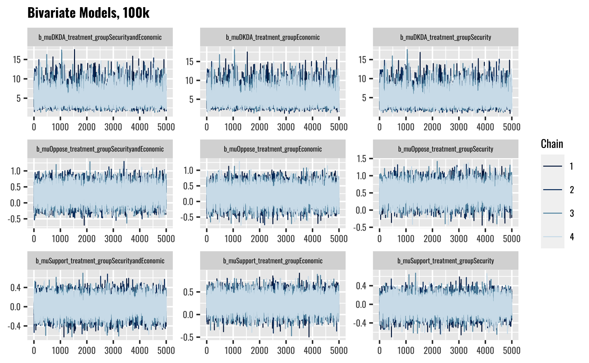
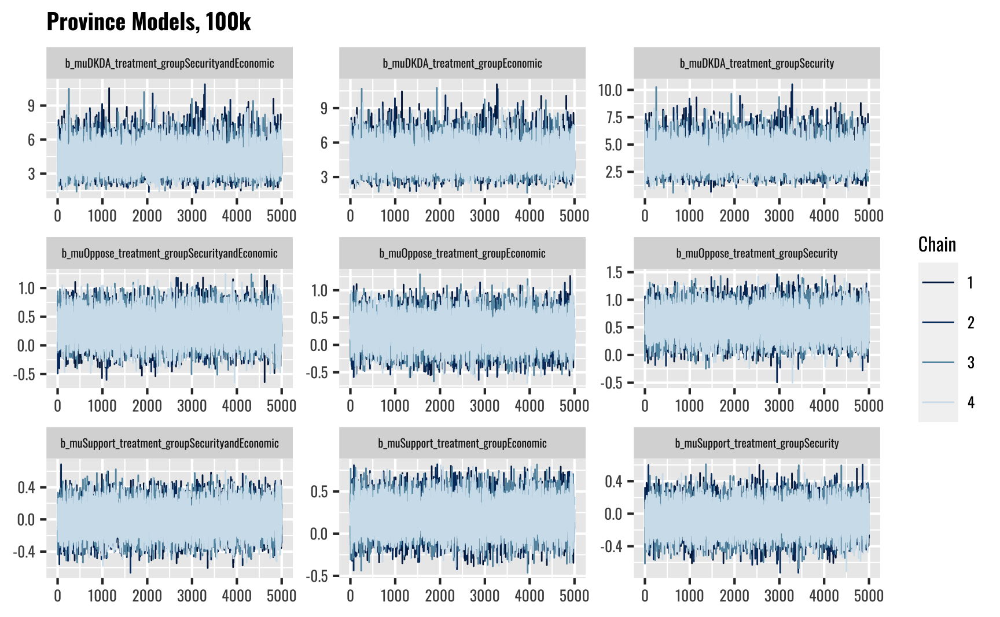
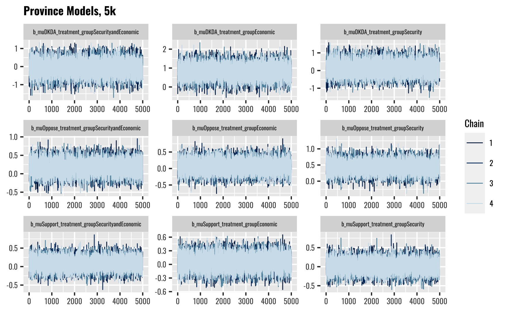
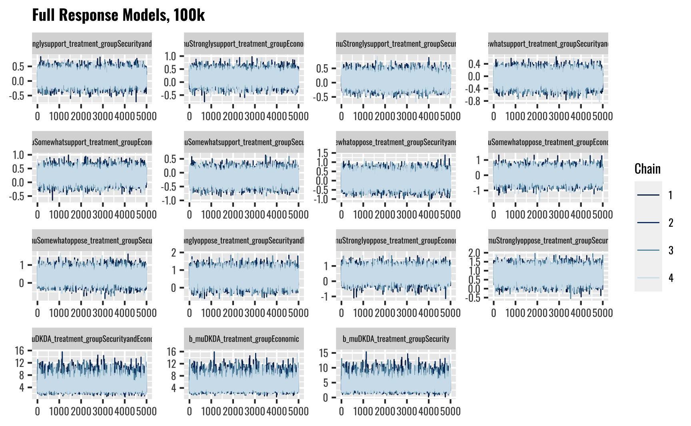
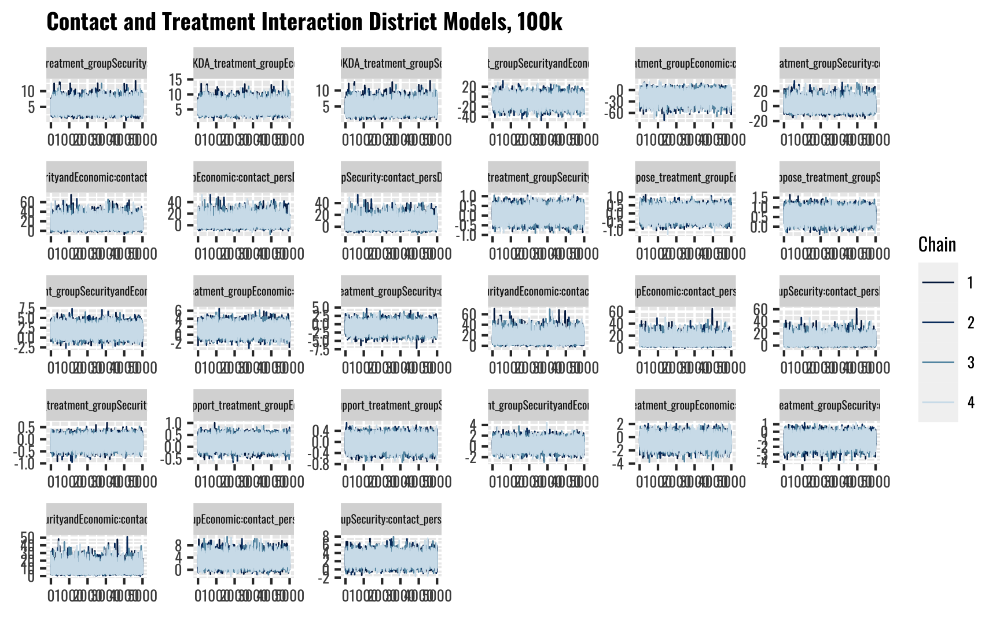
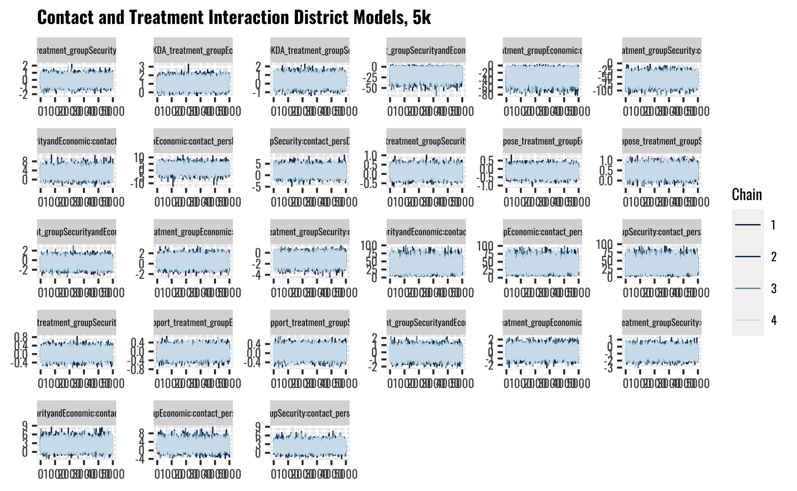
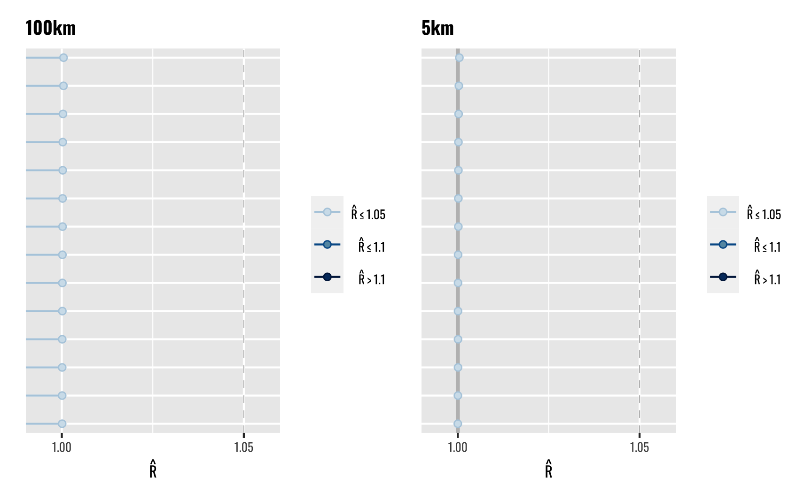
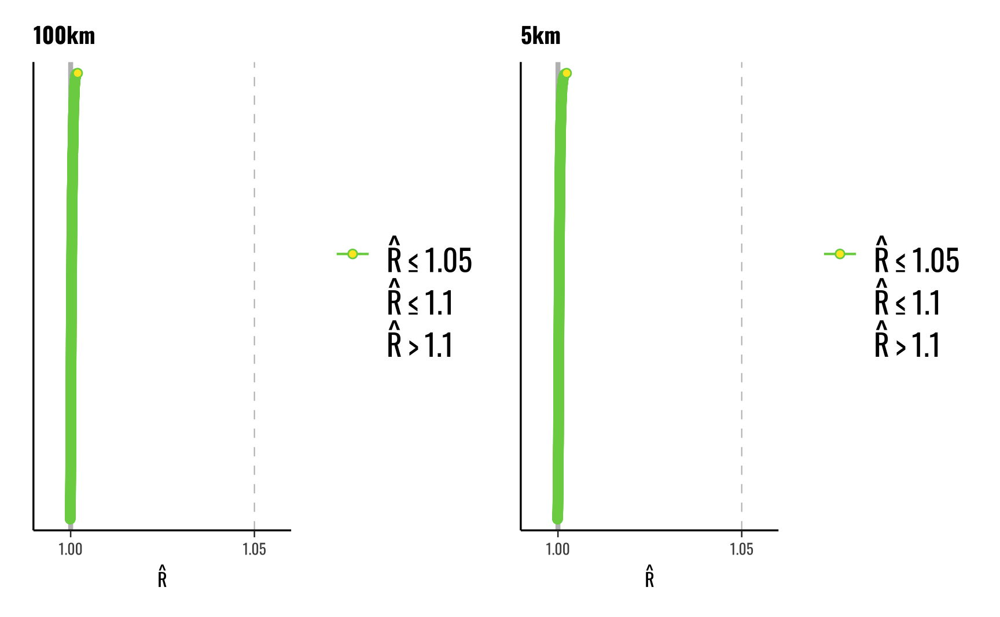
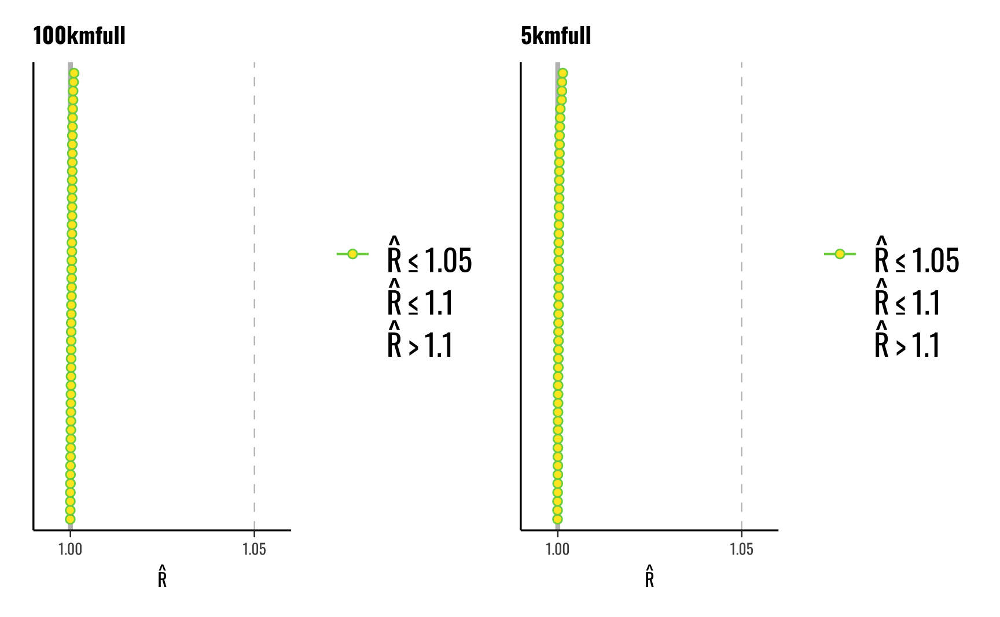
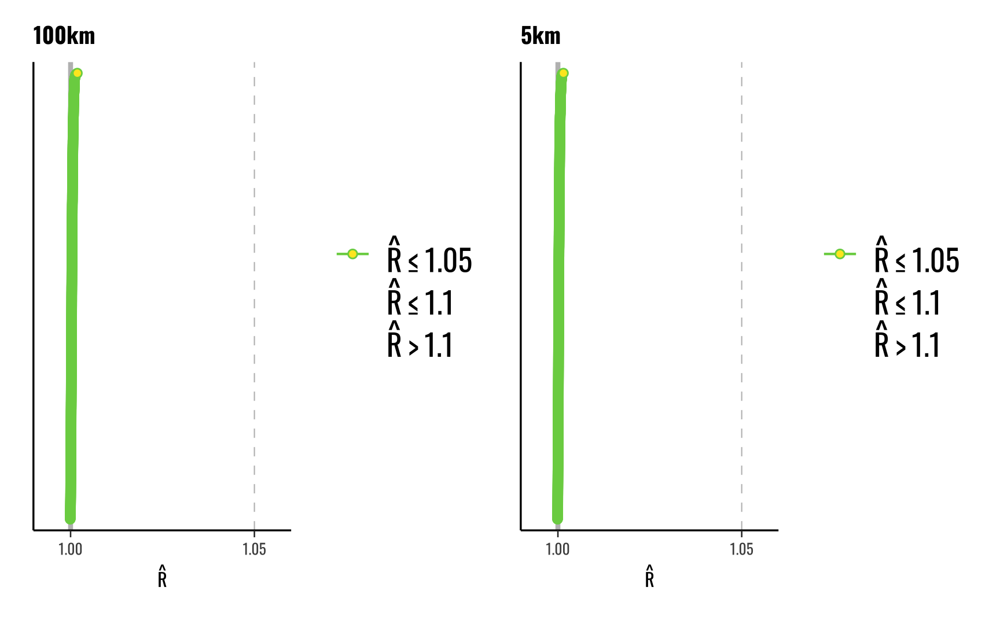

| Predictor Level | Control | Security | Economic | Security and Economic | All Groups |
|---|---|---|---|---|---|
| Gender | |||||
| Male | 273 (25.4%) | 270 (25.1%) | 267 (24.8%) | 265 (24.7%) | 1075 |
| Female | 284 (24.1%) | 302 (25.7%) | 288 (24.5%) | 303 (25.7%) | 1177 |
| None of the above | 0 (0%) | 1 (50%) | 1 (50%) | 0 (0%) | 2 |
| Minority | |||||
| No | 456 (25.3%) | 455 (25.2%) | 449 (24.9%) | 442 (24.5%) | 1802 |
| Yes | 84 (22.5%) | 94 (25.2%) | 92 (24.7%) | 103 (27.6%) | 373 |
| Decline to answer | 17 (21.5%) | 24 (30.4%) | 15 (19%) | 23 (29.1%) | 79 |
| Education | |||||
| Decline to answer | 1 (20%) | 1 (20%) | 1 (20%) | 2 (40%) | 5 |
| Higher Education (Bachelor/Engineer) | 73 (23.2%) | 74 (23.5%) | 83 (26.3%) | 85 (27%) | 315 |
| Higher Education (Master’s degree or higher) | 148 (24.7%) | 161 (26.9%) | 148 (24.7%) | 142 (23.7%) | 599 |
| Primary Education | 24 (34.8%) | 19 (27.5%) | 12 (17.4%) | 14 (20.3%) | 69 |
| Secondary Education | 238 (25%) | 240 (25.2%) | 240 (25.2%) | 234 (24.6%) | 952 |
| Vocational School | 73 (23.2%) | 78 (24.8%) | 72 (22.9%) | 91 (29%) | 314 |
| Age | |||||
| 18 to 24 years | 58 (28.6%) | 50 (24.6%) | 41 (20.2%) | 54 (26.6%) | 203 |
| 25 to 34 years | 114 (26.6%) | 109 (25.5%) | 108 (25.2%) | 97 (22.7%) | 428 |
| 35 to 44 years | 112 (23.7%) | 136 (28.8%) | 110 (23.3%) | 115 (24.3%) | 473 |
| 45 to 54 years | 91 (23.6%) | 85 (22.1%) | 104 (27%) | 105 (27.3%) | 385 |
| 55 to 64 years | 115 (23.3%) | 133 (27%) | 120 (24.3%) | 125 (25.4%) | 493 |
| Age 65 or older | 67 (24.6%) | 60 (22.1%) | 73 (26.8%) | 72 (26.5%) | 272 |
| Income | |||||
| 0 – 43 339 | 109 (25.6%) | 98 (23%) | 111 (26.1%) | 108 (25.4%) | 426 |
| 43 340 – 57 187 | 85 (22.3%) | 112 (29.4%) | 82 (21.5%) | 102 (26.8%) | 381 |
| 57 188 – 74 062 | 113 (25.1%) | 115 (25.6%) | 104 (23.1%) | 118 (26.2%) | 450 |
| 74 063 – 93 937 | 105 (23.4%) | 120 (26.7%) | 118 (26.3%) | 106 (23.6%) | 449 |
| 93 938 + | 114 (25.3%) | 110 (24.4%) | 120 (26.7%) | 106 (23.6%) | 450 |
| Decline to answer | 31 (31.6%) | 18 (18.4%) | 21 (21.4%) | 28 (28.6%) | 98 |
| Income Source | |||||
| Agriculture | 8 (20%) | 15 (37.5%) | 6 (15%) | 11 (27.5%) | 40 |
| Full-time or contract work in the government or public sector | 57 (28.9%) | 49 (24.9%) | 46 (23.4%) | 45 (22.8%) | 197 |
| Full-time or contract work in the private sector | 304 (25.2%) | 300 (24.8%) | 301 (24.9%) | 303 (25.1%) | 1208 |
| Other sources | 56 (24.1%) | 65 (28%) | 54 (23.3%) | 57 (24.6%) | 232 |
| Pension or retirement | 103 (22.5%) | 113 (24.7%) | 121 (26.5%) | 120 (26.3%) | 457 |
| Self-employed (non-agricultural) | 29 (24.2%) | 31 (25.8%) | 28 (23.3%) | 32 (26.7%) | 120 |
| Ideology | |||||
| Ideology | -0.024 (0.488) | 0.02 (0.499) | 0.006 (0.503) | -0.003 (0.51) | 0 (0.5) |
Supplementary Appendix for Outside Threats and Public Perceptions of the U.S. Military in Poland
Overview
These appendices contain supplementary information for the paper Supplementary Appendix for Outside Threats and Public Perceptions of the U.S. Military in Poland. Herein we provide a number of additional resources related to the project. First, we provide basic information about the survey and data collection procedures. Second, we provide some basic descriptive statistis and information to help readers better understand the data and the distribution of key variables and responses. Third, to save space in the primary manuscript we include all of the model tables for the project here. Fourth, we also include a number of additional figures to help communicate the results of our analysis. Finally, we include a number of diagnostic plots generated from the models we run. In general, we focus on a few specific types of plots and, where necessary, on key variables. For example, traceplots for multilevel multinomial logit models can quickly become both numerous and unwiedly in the confines of a PDF or printed document.
Tables
This section contains a number of tables that provide descriptive insights into the data, and information on the models we run for our analysis.
Balance Tables
Table 1 shows the balance of the predictor variables across the four treatment groups in the experiment. Most of the variables in our models are indicator variables, and so the numbers shown in the columns correspond to the number of respondents who chose a particular response for a particular question. For example, the number of people who respond that they identify as either Male or Female.
The value in the parentheses indicates the percentage of responses that fall into each of the four treatment categories. In general, we expect this value to fall close to 25% for each row.
Last, the final column shows the total number of responses for each category/row.
We do not conduct a formal balance test, but this table helps us to ensure that the randomization procedure worked as intended. In general, we see most response-treatment groups falling at around the 25% mark, which is what we should expect if individuals were randomly assigned to one of the four treatment categories. We see more substantial deviations where the total number of observations for a given response is low. For example, with only 40 total respondents indicating that their primary income source was in the agricultural sector, small differences in the number of people who fall into each treatment group have a larger effect on the percentage value.
The final row shows the mean value and standard deviation (in parentheses) for the ideology score, which is the only ordered integer response variable we included in the survey. Since we mean-center this measure, each category should have a mean of approximately 0 and a standard deviation of 0.5.
Model Tables
This section contains the tables for the models we run in our analysis. All of the models were run using brms package version 2.19.0 [Bürkner (2017); Bürkner (2018); Stan2023].
- Table 2 shows the results of a multinomial logit model where we regress the outcome variable on the treatment group variable.
- Table 3 shows the results of our primary multinomial multilevel logit model. This model regresses the outcome response onto the treatment variable and several other predictor variables. Varying intercepts by province.
- Table 4 shows the results of our a multinomial multilevel logit model that regresses the outcome response onto the treatment variable and several other predictor variables. Varying intercepts by province and district.
- Table 5 shows the results of a model where we use the full six category response variable rather than the four category response used in our primary models.
- Table 6 shows the results of a model that replicates our primary multilevel model, but allows the effects of the treatment variable to vary across province.
- Table 7 changes the basic model specification slightly and uses the treatment group as the grouping term for the varying intercepts. We also include a variable indicating whether the respondent reported having personal contact with a U.S. service member, and we allow this effect to vary across treatment groups.
- Table 8 builds upon our primary model in Table 3 by adding a variable indicating whether the respondent reported having personal contact with a U.S. service member, and an interaction term between the contact variable and the treatment. We also include varying intercepts on province.
- Table 9 replicates the models from Table 8 but includes varying intercepts on both province and district.
| DKDA | Oppose | Support | DKDA | Oppose | Support | |
|---|---|---|---|---|---|---|
| Treatment | ||||||
| Economic | 5.804 | 0.205 | 0.243 | 0.469 | 0.005 | 0.063 |
| [2.695, 10.958] | [−0.303, 0.712] | [−0.101, 0.588] | [−0.184, 1.143] | [−0.377, 0.380] | [−0.249, 0.376] | |
| Security | 5.253 | 0.489 | −0.033 | −0.053 | 0.358 | 0.019 |
| [2.134, 10.421] | [0.027, 0.955] | [−0.358, 0.297] | [−0.785, 0.670] | [−0.008, 0.728] | [−0.296, 0.342] | |
| Security and Economic | 5.568 | 0.265 | 0.008 | −0.158 | 0.109 | 0.050 |
| [2.465, 10.722] | [−0.226, 0.756] | [−0.324, 0.342] | [−0.915, 0.577] | [−0.260, 0.474] | [−0.267, 0.362] | |
| Intercept | −6.847 | −0.586 | 1.536 | −1.801 | 0.107 | 1.077 |
| [−12.026, −3.789] | [−0.940, −0.239] | [1.304, 1.772] | [−2.332, −1.318] | [−0.156, 0.371] | [0.860, 1.304] | |
| N | 2239 | 2254 | ||||
| N.Groups | 0 | 0 | ||||
| DKDA | Oppose | Support | DKDA | Oppose | Support | |
|---|---|---|---|---|---|---|
| Treatment | ||||||
| Economic | 4.781 | 0.250 | 0.204 | 0.794 | 0.061 | 0.044 |
| [2.857, 7.361] | [−0.264, 0.764] | [−0.153, 0.557] | [0.093, 1.494] | [−0.311, 0.438] | [−0.273, 0.366] | |
| Security | 3.935 | 0.579 | −0.063 | 0.141 | 0.433 | 0.018 |
| [2.021, 6.528] | [0.111, 1.054] | [−0.398, 0.271] | [−0.643, 0.916] | [0.064, 0.807] | [−0.306, 0.343] | |
| Security and Economic | 4.350 | 0.320 | 0.002 | −0.077 | 0.168 | 0.083 |
| [2.430, 6.962] | [−0.166, 0.810] | [−0.337, 0.340] | [−0.874, 0.716] | [−0.210, 0.547] | [−0.241, 0.401] | |
| Age | ||||||
| 25-34 | −1.802 | −0.072 | −0.113 | −1.393 | −0.312 | −0.058 |
| [−2.362, −1.245] | [−0.401, 0.258] | [−0.385, 0.154] | [−1.921, −0.860] | [−0.600, −0.022] | [−0.330, 0.211] | |
| 35-44 | −1.989 | −0.304 | 0.039 | −1.496 | −0.616 | 0.046 |
| [−2.559, −1.409] | [−0.632, 0.026] | [−0.229, 0.308] | [−2.030, −0.960] | [−0.903, −0.327] | [−0.221, 0.314] | |
| 45-54 | −1.868 | −0.343 | 0.084 | −1.462 | −0.693 | 0.153 |
| [−2.480, −1.262] | [−0.686, 0.008] | [−0.202, 0.364] | [−2.041, −0.886] | [−1.003, −0.385] | [−0.132, 0.435] | |
| 55-64 | −1.787 | −0.434 | 0.462 | −1.549 | −0.925 | 0.413 |
| [−2.502, −1.088] | [−0.833, −0.030] | [0.152, 0.770] | [−2.203, −0.896] | [−1.267, −0.578] | [0.107, 0.714] | |
| 65+ | −2.519 | 0.202 | 0.656 | −2.222 | −0.498 | 0.565 |
| [−3.696, −1.321] | [−0.542, 0.960] | [0.133, 1.181] | [−3.284, −1.150] | [−1.095, 0.097] | [0.066, 1.065] | |
| Income | ||||||
| Second Quantile | −0.905 | 0.023 | −0.104 | −0.915 | −0.038 | −0.108 |
| [−1.439, −0.381] | [−0.301, 0.348] | [−0.356, 0.146] | [−1.415, −0.419] | [−0.317, 0.248] | [−0.355, 0.142] | |
| Third Quantile | −0.564 | 0.125 | −0.061 | −0.711 | 0.078 | −0.031 |
| [−1.075, −0.054] | [−0.188, 0.450] | [−0.309, 0.186] | [−1.194, −0.231] | [−0.200, 0.361] | [−0.271, 0.213] | |
| Fourth Quantile | −0.908 | 0.014 | 0.051 | −0.951 | −0.022 | −0.041 |
| [−1.487, −0.333] | [−0.327, 0.356] | [−0.210, 0.312] | [−1.492, −0.414] | [−0.318, 0.275] | [−0.298, 0.216] | |
| Fifth Quantile | −0.752 | 0.115 | 0.179 | −0.779 | 0.037 | 0.136 |
| [−1.426, −0.074] | [−0.273, 0.508] | [−0.112, 0.472] | [−1.413, −0.149] | [−0.291, 0.363] | [−0.146, 0.417] | |
| Income Decline | −0.328 | 0.645 | −0.123 | 0.306 | 0.240 | −0.321 |
| [−1.568, 0.864] | [−0.172, 1.467] | [−0.758, 0.548] | [−0.668, 1.241] | [−0.424, 0.893] | [−0.931, 0.311] | |
| Income Source | ||||||
| Public sector contract work | 1.331 | 0.145 | 0.644 | −0.243 | 0.093 | 0.862 |
| [−1.099, 4.201] | [−1.090, 1.414] | [−0.297, 1.538] | [−1.994, 1.653] | [−0.891, 1.065] | [−0.069, 1.769] | |
| Private sector contract work | 1.405 | 0.116 | 0.633 | −0.224 | 0.257 | 1.011 |
| [−0.805, 4.177] | [−0.973, 1.280] | [−0.215, 1.434] | [−1.719, 1.500] | [−0.635, 1.149] | [0.152, 1.852] | |
| Pension or Retirement | 2.582 | −0.171 | 0.576 | 1.186 | 0.208 | 1.127 |
| [0.182, 5.450] | [−1.434, 1.131] | [−0.363, 1.468] | [−0.483, 3.040] | [−0.796, 1.208] | [0.190, 2.048] | |
| Self-employed (non-agricultural) | −0.052 | −0.311 | 0.391 | −1.260 | 0.207 | 1.093 |
| [−3.507, 3.324] | [−1.634, 1.033] | [−0.573, 1.321] | [−4.237, 1.251] | [−0.853, 1.250] | [0.106, 2.068] | |
| Other sources | 1.883 | 0.097 | 0.576 | −0.158 | −0.156 | 0.423 |
| [−0.336, 4.692] | [−1.062, 1.322] | [−0.335, 1.438] | [−1.701, 1.591] | [−1.105, 0.786] | [−0.482, 1.323] | |
| Education | ||||||
| Bachelor's degree or Engineer | 0.801 | 0.471 | 1.943 | 3.540 | 0.148 | 5.172 |
| [−2.588, 4.290] | [−2.524, 3.929] | [−0.971, 5.362] | [−1.013, 11.578] | [−2.023, 2.445] | [−0.128, 15.154] | |
| Master's degree or higher | 0.857 | 0.245 | 1.652 | 3.065 | 0.360 | 5.401 |
| [−2.558, 4.354] | [−2.757, 3.683] | [−1.267, 5.071] | [−1.516, 11.118] | [−1.809, 2.676] | [0.114, 15.378] | |
| Primary Education | 2.039 | 0.088 | 2.156 | 5.530 | 1.171 | 6.347 |
| [−1.442, 5.557] | [−3.140, 3.709] | [−0.868, 5.693] | [0.900, 13.609] | [−1.179, 3.625] | [0.923, 16.374] | |
| Secondary Education | 0.383 | 0.302 | 1.595 | 3.346 | 0.447 | 5.304 |
| [−2.921, 3.770] | [−2.685, 3.739] | [−1.313, 5.006] | [−1.128, 11.369] | [−1.704, 2.742] | [0.012, 15.303] | |
| Vocational School | 0.960 | 0.284 | 1.345 | 3.745 | 0.354 | 5.064 |
| [−2.336, 4.382] | [−2.721, 3.744] | [−1.569, 4.770] | [−0.725, 11.744] | [−1.829, 2.680] | [−0.215, 15.063] | |
| Ideology | ||||||
| Ideology | −0.296 | −0.372 | 0.597 | −0.320 | −0.302 | 0.567 |
| [−0.541, −0.053] | [−0.497, −0.247] | [0.491, 0.702] | [−0.560, −0.081] | [−0.422, −0.183] | [0.463, 0.671] | |
| Minority | ||||||
| Minority: Yes | 0.186 | 0.058 | −0.213 | −0.038 | −0.068 | −0.213 |
| [−0.224, 0.589] | [−0.158, 0.269] | [−0.381, −0.046] | [−0.438, 0.356] | [−0.266, 0.126] | [−0.383, −0.045] | |
| Minority: Decline | 2.044 | −0.219 | −0.446 | 1.104 | −0.581 | −0.592 |
| [1.333, 2.761] | [−0.882, 0.429] | [−0.952, 0.063] | [0.400, 1.788] | [−1.141, −0.026] | [−1.082, −0.092] | |
| Gender | ||||||
| Female | 0.606 | −0.110 | −0.401 | 0.659 | 0.013 | −0.394 |
| [0.365, 0.848] | [−0.240, 0.019] | [−0.505, −0.300] | [0.426, 0.890] | [−0.104, 0.129] | [−0.493, −0.294] | |
| None of the Above | −12.169 | −0.773 | −23.836 | −12.359 | −0.555 | −22.964 |
| [−37.613, 1.756] | [−4.690, 3.161] | [−48.254, −3.736] | [−38.296, 1.669] | [−4.379, 3.218] | [−47.378, −2.382] | |
| Intercept | ||||||
| Intercept | −6.872 | −0.862 | −0.544 | −4.476 | 0.002 | −5.065 |
| [−11.790, −2.373] | [−4.455, 2.345] | [−4.058, 2.485] | [−12.643, 0.392] | [−2.481, 2.383] | [−15.015, 0.331] | |
| N | 2239 | 2254 | ||||
| N.Groups | 16 | 16 | ||||
| Groups | province | province | ||||
| DKDA | Oppose | Support | DKDA | Oppose | Support | |
|---|---|---|---|---|---|---|
| Treatment | ||||||
| Economic | 4.988 | 0.254 | 0.205 | 0.900 | 0.062 | 0.044 |
| [3.092, 7.555] | [−0.271, 0.775] | [−0.146, 0.551] | [0.161, 1.671] | [−0.324, 0.445] | [−0.282, 0.371] | |
| Security | 4.001 | 0.588 | −0.066 | 0.158 | 0.435 | 0.015 |
| [2.102, 6.569] | [0.115, 1.065] | [−0.403, 0.276] | [−0.664, 0.975] | [0.059, 0.805] | [−0.313, 0.343] | |
| Security and Economic | 4.514 | 0.332 | 0.000 | −0.021 | 0.178 | 0.085 |
| [2.611, 7.072] | [−0.154, 0.830] | [−0.338, 0.333] | [−0.844, 0.797] | [−0.197, 0.559] | [−0.239, 0.407] | |
| Age | ||||||
| 25-34 | −1.924 | −0.068 | −0.103 | −1.479 | −0.306 | −0.054 |
| [−2.519, −1.340] | [−0.396, 0.258] | [−0.367, 0.159] | [−2.041, −0.926] | [−0.596, −0.020] | [−0.321, 0.218] | |
| 35-44 | −2.126 | −0.303 | 0.050 | −1.609 | −0.609 | 0.053 |
| [−2.717, −1.533] | [−0.632, 0.023] | [−0.210, 0.309] | [−2.173, −1.046] | [−0.898, −0.318] | [−0.213, 0.324] | |
| 45-54 | −1.997 | −0.344 | 0.098 | −1.559 | −0.688 | 0.161 |
| [−2.642, −1.366] | [−0.699, 0.005] | [−0.186, 0.379] | [−2.164, −0.962] | [−0.995, −0.381] | [−0.121, 0.445] | |
| 55-64 | −1.942 | −0.431 | 0.475 | −1.660 | −0.918 | 0.421 |
| [−2.680, −1.223] | [−0.830, −0.026] | [0.168, 0.784] | [−2.360, −0.983] | [−1.265, −0.574] | [0.114, 0.725] | |
| 65+ | −2.738 | 0.215 | 0.673 | −2.341 | −0.490 | 0.571 |
| [−3.996, −1.493] | [−0.554, 0.975] | [0.146, 1.198] | [−3.459, −1.253] | [−1.080, 0.100] | [0.071, 1.069] | |
| Income | ||||||
| Second Quantile | −0.881 | 0.022 | −0.099 | −0.922 | −0.031 | −0.104 |
| [−1.428, −0.331] | [−0.296, 0.345] | [−0.349, 0.152] | [−1.436, −0.400] | [−0.307, 0.254] | [−0.353, 0.141] | |
| Third Quantile | −0.538 | 0.121 | −0.058 | −0.706 | 0.082 | −0.029 |
| [−1.072, 0.000] | [−0.198, 0.444] | [−0.301, 0.190] | [−1.206, −0.199] | [−0.193, 0.354] | [−0.273, 0.214] | |
| Fourth Quantile | −0.855 | 0.007 | 0.054 | −0.925 | −0.018 | −0.040 |
| [−1.449, −0.252] | [−0.343, 0.354] | [−0.207, 0.318] | [−1.494, −0.352] | [−0.309, 0.274] | [−0.299, 0.215] | |
| Fifth Quantile | −0.699 | 0.107 | 0.182 | −0.752 | 0.035 | 0.139 |
| [−1.395, 0.010] | [−0.282, 0.500] | [−0.113, 0.474] | [−1.416, −0.086] | [−0.288, 0.358] | [−0.149, 0.418] | |
| Income Decline | −0.178 | 0.650 | −0.116 | 0.390 | 0.252 | −0.319 |
| [−1.542, 1.117] | [−0.166, 1.483] | [−0.757, 0.555] | [−0.641, 1.395] | [−0.410, 0.911] | [−0.934, 0.312] | |
| Income Source | ||||||
| Public sector contract work | 1.284 | 0.142 | 0.649 | −0.338 | 0.086 | 0.855 |
| [−1.293, 4.322] | [−1.112, 1.426] | [−0.301, 1.548] | [−2.160, 1.617] | [−0.911, 1.060] | [−0.075, 1.788] | |
| Private sector contract work | 1.189 | 0.112 | 0.637 | −0.392 | 0.257 | 1.009 |
| [−1.184, 4.133] | [−1.014, 1.279] | [−0.223, 1.440] | [−1.951, 1.361] | [−0.640, 1.144] | [0.147, 1.862] | |
| Pension or Retirement | 2.464 | −0.192 | 0.577 | 1.059 | 0.201 | 1.128 |
| [−0.040, 5.510] | [−1.518, 1.147] | [−0.375, 1.480] | [−0.632, 2.923] | [−0.805, 1.210] | [0.208, 2.054] | |
| Self-employed (non-agricultural) | −0.363 | −0.343 | 0.394 | −1.421 | 0.210 | 1.097 |
| [−3.899, 3.134] | [−1.688, 1.018] | [−0.571, 1.325] | [−4.415, 1.159] | [−0.853, 1.255] | [0.119, 2.080] | |
| Other sources | 1.697 | 0.087 | 0.579 | −0.286 | −0.152 | 0.424 |
| [−0.687, 4.652] | [−1.124, 1.332] | [−0.346, 1.450] | [−1.891, 1.487] | [−1.108, 0.776] | [−0.487, 1.332] | |
| Education | ||||||
| Bachelor's degree or Engineer | 0.574 | 0.479 | 1.930 | 3.661 | 0.078 | 5.034 |
| [−3.014, 4.369] | [−2.475, 3.854] | [−0.929, 5.181] | [−1.271, 12.356] | [−2.125, 2.437] | [−0.147, 14.687] | |
| Master's degree or higher | 0.567 | 0.256 | 1.638 | 3.157 | 0.292 | 5.263 |
| [−3.036, 4.305] | [−2.665, 3.628] | [−1.213, 4.869] | [−1.802, 11.861] | [−1.918, 2.621] | [0.099, 14.917] | |
| Primary Education | 1.979 | 0.038 | 2.143 | 5.723 | 1.090 | 6.207 |
| [−1.672, 5.847] | [−3.121, 3.572] | [−0.785, 5.443] | [0.702, 14.480] | [−1.259, 3.589] | [0.917, 15.905] | |
| Secondary Education | 0.064 | 0.307 | 1.584 | 3.410 | 0.375 | 5.166 |
| [−3.438, 3.749] | [−2.613, 3.630] | [−1.251, 4.807] | [−1.446, 12.057] | [−1.799, 2.709] | [−0.011, 14.805] | |
| Vocational School | 0.742 | 0.286 | 1.339 | 3.915 | 0.279 | 4.929 |
| [−2.776, 4.433] | [−2.649, 3.645] | [−1.503, 4.561] | [−0.978, 12.627] | [−1.926, 2.612] | [−0.248, 14.561] | |
| Ideology | ||||||
| Ideology | −0.313 | −0.373 | 0.601 | −0.330 | −0.304 | 0.570 |
| [−0.555, −0.069] | [−0.502, −0.246] | [0.493, 0.707] | [−0.571, −0.088] | [−0.425, −0.185] | [0.466, 0.675] | |
| Minority | ||||||
| Minority: Yes | 0.190 | 0.059 | −0.215 | −0.033 | −0.068 | −0.214 |
| [−0.221, 0.596] | [−0.154, 0.274] | [−0.383, −0.045] | [−0.434, 0.361] | [−0.264, 0.126] | [−0.379, −0.049] | |
| Minority: Decline | 2.285 | −0.231 | −0.485 | 1.293 | −0.599 | −0.611 |
| [1.489, 3.102] | [−0.900, 0.410] | [−0.990, 0.015] | [0.525, 2.071] | [−1.167, −0.049] | [−1.107, −0.109] | |
| Gender | ||||||
| Female | 0.595 | −0.110 | −0.400 | 0.664 | 0.011 | −0.393 |
| [0.353, 0.836] | [−0.243, 0.020] | [−0.501, −0.296] | [0.421, 0.904] | [−0.107, 0.131] | [−0.494, −0.294] | |
| None of the Above | −12.210 | −0.798 | −23.776 | −12.386 | −0.545 | −23.114 |
| [−38.321, 2.224] | [−4.666, 2.993] | [−48.262, −3.649] | [−38.464, 1.927] | [−4.440, 3.205] | [−48.105, −2.485] | |
| Intercept | ||||||
| Intercept | −6.991 | −0.911 | −0.539 | −4.792 | 0.038 | −4.934 |
| [−12.223, −2.199] | [−4.397, 2.241] | [−3.854, 2.412] | [−13.593, 0.446] | [−2.444, 2.394] | [−14.536, 0.302] | |
| N | 2239 | 2254 | ||||
| N | 2239 | 16 | ||||
| N | 16 | 2254 | ||||
| N | 16 | 16 | ||||
| N.Groups | 2239 | 2254 | ||||
| N.Groups | 2239 | province | ||||
| N.Groups | province | 2254 | ||||
| N.Groups | province | province | ||||
| Groups | 16 | 16 | ||||
| Groups | 16 | province:district | ||||
| Groups | province:district | 16 | ||||
| Groups | province:district | province:district | ||||
| Stronglysupport | Somewhatsupport | Somewhatoppose | Stronglyoppose | DKDA | Stronglysupport | Somewhatsupport | Somewhatoppose | Stronglyoppose | DKDA | |
|---|---|---|---|---|---|---|---|---|---|---|
| Treatment | ||||||||||
| Economic | 0.163 | 0.239 | −0.010 | 0.443 | 5.526 | −0.004 | 0.049 | 0.111 | −0.079 | 0.563 |
| [−0.227, 0.554] | [−0.145, 0.621] | [−0.667, 0.655] | [−0.236, 1.136] | [2.722, 9.973] | [−0.379, 0.371] | [−0.316, 0.407] | [−0.345, 0.559] | [−0.556, 0.398] | [−0.128, 1.276] | |
| Security | 0.096 | −0.186 | 0.373 | 0.756 | 4.787 | 0.140 | −0.071 | 0.424 | 0.407 | −0.059 |
| [−0.278, 0.473] | [−0.559, 0.187] | [−0.213, 0.958] | [0.143, 1.395] | [1.964, 9.267] | [−0.235, 0.515] | [−0.445, 0.295] | [−0.004, 0.861] | [−0.040, 0.862] | [−0.832, 0.714] | |
| Security and Economic | 0.111 | −0.077 | 0.048 | 0.565 | 5.244 | 0.229 | −0.043 | 0.195 | 0.099 | −0.169 |
| [−0.264, 0.489] | [−0.448, 0.295] | [−0.564, 0.654] | [−0.076, 1.231] | [2.450, 9.722] | [−0.142, 0.602] | [−0.402, 0.318] | [−0.249, 0.643] | [−0.371, 0.564] | [−0.943, 0.605] | |
| Age | ||||||||||
| 25-34 | 0.169 | 0.035 | 0.080 | 0.995 | 0.089 | 0.325 | 0.189 | −0.071 | 0.124 | 1.017 |
| [−0.359, 0.693] | [−0.443, 0.511] | [−0.672, 0.844] | [0.066, 2.008] | [−1.009, 1.236] | [−0.291, 0.954] | [−0.309, 0.700] | [−0.607, 0.465] | [−0.455, 0.699] | [−0.199, 2.390] | |
| 35-44 | 0.644 | 0.164 | 0.019 | 0.832 | 0.249 | 0.875 | −0.092 | −0.428 | −0.395 | 1.353 |
| [0.122, 1.163] | [−0.326, 0.647] | [−0.771, 0.833] | [−0.116, 1.872] | [−0.851, 1.407] | [0.295, 1.461] | [−0.586, 0.413] | [−0.976, 0.114] | [−0.991, 0.212] | [0.170, 2.719] | |
| 45-54 | 0.823 | 0.333 | 0.274 | 1.455 | 0.662 | 1.358 | 0.576 | −0.106 | 0.385 | 1.761 |
| [0.263, 1.390] | [−0.201, 0.864] | [−0.567, 1.123] | [0.491, 2.519] | [−0.526, 1.883] | [0.739, 1.986] | [0.025, 1.131] | [−0.711, 0.512] | [−0.248, 1.030] | [0.471, 3.158] | |
| 55-64 | 1.278 | 0.516 | −0.260 | 0.937 | 1.360 | 1.411 | 0.368 | −1.208 | −0.233 | 1.756 |
| [0.710, 1.855] | [−0.031, 1.061] | [−1.225, 0.682] | [−0.108, 2.048] | [0.219, 2.559] | [0.808, 2.035] | [−0.170, 0.910] | [−1.886, −0.531] | [−0.902, 0.425] | [0.506, 3.171] | |
| 65+ | 1.665 | 1.009 | 1.303 | 1.552 | 0.189 | 1.636 | 0.933 | −0.240 | 0.150 | 0.711 |
| [0.866, 2.485] | [0.193, 1.830] | [0.026, 2.605] | [0.164, 2.991] | [−1.570, 1.865] | [0.838, 2.448] | [0.184, 1.705] | [−1.176, 0.705] | [−0.811, 1.109] | [−0.978, 2.479] | |
| Income | ||||||||||
| Second Quantile | −0.254 | 0.148 | 0.376 | 0.120 | −0.057 | −0.103 | 0.179 | 0.293 | 0.113 | −0.305 |
| [−0.703, 0.187] | [−0.287, 0.589] | [−0.364, 1.132] | [−0.566, 0.800] | [−0.921, 0.787] | [−0.561, 0.353] | [−0.263, 0.632] | [−0.219, 0.824] | [−0.431, 0.649] | [−1.111, 0.480] | |
| Third Quantile | −0.209 | 0.013 | 0.515 | −0.265 | −0.209 | −0.032 | 0.147 | 0.403 | −0.131 | −0.894 |
| [−0.634, 0.220] | [−0.407, 0.431] | [−0.196, 1.247] | [−0.972, 0.442] | [−1.089, 0.658] | [−0.462, 0.400] | [−0.279, 0.575] | [−0.091, 0.909] | [−0.671, 0.398] | [−1.799, −0.040] | |
| Fourth Quantile | 0.352 | 0.346 | 0.472 | 0.061 | 0.038 | 0.100 | 0.220 | 0.174 | 0.082 | −0.597 |
| [−0.101, 0.797] | [−0.108, 0.798] | [−0.299, 1.250] | [−0.670, 0.789] | [−0.924, 0.959] | [−0.347, 0.551] | [−0.224, 0.660] | [−0.354, 0.705] | [−0.445, 0.626] | [−1.470, 0.223] | |
| Fifth Quantile | 0.463 | 0.434 | 0.451 | 0.118 | −0.090 | 0.244 | 0.320 | 0.182 | −0.150 | −0.806 |
| [−0.009, 0.935] | [−0.044, 0.919] | [−0.366, 1.279] | [−0.647, 0.885] | [−1.163, 0.934] | [−0.214, 0.708] | [−0.138, 0.778] | [−0.383, 0.743] | [−0.732, 0.422] | [−1.813, 0.143] | |
| Income Decline | −0.340 | 0.052 | 0.982 | 0.262 | −0.173 | −0.550 | −0.080 | 0.246 | 0.316 | 0.481 |
| [−1.061, 0.398] | [−0.640, 0.770] | [−0.044, 1.981] | [−0.838, 1.299] | [−1.512, 1.062] | [−1.317, 0.207] | [−0.798, 0.622] | [−0.574, 1.041] | [−0.479, 1.092] | [−0.479, 1.419] | |
| Income Source | ||||||||||
| Public sector contract work | 0.803 | 0.448 | 0.232 | 0.301 | 1.251 | 0.547 | 1.593 | −0.129 | 0.642 | −0.396 |
| [−0.242, 1.836] | [−0.580, 1.483] | [−1.261, 1.940] | [−1.324, 2.114] | [−1.224, 4.501] | [−0.458, 1.584] | [0.241, 3.190] | [−1.229, 0.987] | [−0.657, 2.132] | [−2.075, 1.405] | |
| Private sector contract work | 0.629 | 0.567 | 0.050 | 0.448 | 1.277 | 0.566 | 1.832 | 0.011 | 0.860 | −0.411 |
| [−0.328, 1.577] | [−0.369, 1.513] | [−1.316, 1.650] | [−0.965, 2.142] | [−0.946, 4.395] | [−0.370, 1.515] | [0.547, 3.380] | [−0.968, 1.022] | [−0.350, 2.254] | [−1.823, 1.228] | |
| Pension or Retirement | 0.686 | 0.313 | −0.369 | 0.175 | 1.823 | 0.881 | 1.811 | 0.142 | 0.685 | 0.581 |
| [−0.371, 1.732] | [−0.746, 1.377] | [−2.010, 1.415] | [−1.467, 2.004] | [−0.539, 5.059] | [−0.141, 1.931] | [0.440, 3.416] | [−1.004, 1.326] | [−0.665, 2.211] | [−0.961, 2.333] | |
| Self-employed (non-agricultural) | 0.388 | 0.224 | −0.407 | −0.043 | −0.256 | 0.630 | 1.885 | 0.086 | 0.671 | −1.587 |
| [−0.709, 1.482] | [−0.877, 1.316] | [−2.120, 1.462] | [−1.778, 1.863] | [−3.883, 3.434] | [−0.450, 1.732] | [0.488, 3.519] | [−1.087, 1.291] | [−0.747, 2.201] | [−4.735, 0.973] | |
| Other sources | 0.593 | 0.537 | 0.274 | 0.154 | 1.751 | 0.182 | 1.089 | −0.358 | 0.447 | −0.147 |
| [−0.435, 1.603] | [−0.467, 1.547] | [−1.173, 1.921] | [−1.396, 1.939] | [−0.526, 4.915] | [−0.824, 1.193] | [−0.239, 2.676] | [−1.413, 0.708] | [−0.819, 1.875] | [−1.609, 1.498] | |
| Education | ||||||||||
| Bachelor's degree or Engineer | 34.487 | 1.479 | −0.200 | 32.593 | −0.200 | 32.319 | 34.735 | −1.220 | 33.156 | 32.430 |
| [2.081, 96.524] | [−1.335, 4.910] | [−3.157, 3.408] | [0.676, 92.839] | [−3.383, 3.495] | [1.064, 92.141] | [1.757, 94.973] | [−3.375, 1.119] | [1.513, 92.818] | [0.350, 92.226] | |
| Master's degree or higher | 34.145 | 1.216 | −0.042 | 32.042 | −0.235 | 32.516 | 34.986 | −0.625 | 33.055 | 32.127 |
| [1.774, 96.099] | [−1.593, 4.649] | [−2.991, 3.543] | [0.131, 92.316] | [−3.373, 3.485] | [1.266, 92.457] | [2.032, 95.339] | [−2.766, 1.682] | [1.472, 92.711] | [0.078, 91.842] | |
| Primary Education | 34.769 | 1.470 | −1.770 | 32.439 | 1.152 | 33.653 | 35.668 | 0.296 | 33.383 | 34.705 |
| [2.387, 96.863] | [−1.461, 5.016] | [−5.875, 2.344] | [0.476, 92.564] | [−2.115, 4.921] | [2.431, 93.490] | [2.666, 95.879] | [−2.030, 2.815] | [1.658, 92.997] | [2.589, 94.429] | |
| Secondary Education | 34.020 | 1.229 | −0.276 | 32.387 | −0.681 | 32.392 | 34.917 | −0.531 | 33.124 | 32.247 |
| [1.649, 96.095] | [−1.568, 4.660] | [−3.187, 3.292] | [0.519, 92.653] | [−3.774, 3.019] | [1.163, 92.270] | [1.972, 95.252] | [−2.645, 1.764] | [1.521, 92.834] | [0.173, 91.933] | |
| Vocational School | 33.942 | 0.793 | −0.209 | 32.185 | −0.015 | 32.129 | 34.691 | −0.597 | 32.932 | 32.678 |
| [1.589, 95.995] | [−2.018, 4.226] | [−3.136, 3.359] | [0.287, 92.475] | [−3.128, 3.657] | [0.911, 91.971] | [1.714, 95.026] | [−2.740, 1.711] | [1.341, 92.647] | [0.595, 92.456] | |
| Ideology | ||||||||||
| Ideology | 0.462 | 0.154 | 0.052 | 0.009 | 0.205 | 0.501 | 0.138 | −0.091 | 0.121 | 0.087 |
| [0.182, 0.750] | [−0.129, 0.442] | [−0.405, 0.516] | [−0.444, 0.467] | [−0.368, 0.776] | [0.235, 0.771] | [−0.132, 0.408] | [−0.428, 0.245] | [−0.223, 0.457] | [−0.436, 0.609] | |
| Minority | ||||||||||
| Minority: Yes | −0.178 | −0.094 | 0.009 | −0.309 | 0.753 | −0.127 | −0.196 | −0.313 | −0.227 | 0.186 |
| [−0.535, 0.190] | [−0.447, 0.263] | [−0.577, 0.574] | [−0.927, 0.289] | [0.043, 1.424] | [−0.486, 0.234] | [−0.547, 0.165] | [−0.738, 0.100] | [−0.683, 0.214] | [−0.511, 0.855] | |
| Minority: Decline | −0.679 | −0.547 | −0.131 | −0.542 | 1.666 | −1.017 | −1.068 | −1.250 | −0.636 | 0.148 |
| [−1.424, 0.055] | [−1.263, 0.159] | [−1.210, 0.853] | [−1.858, 0.588] | [0.687, 2.643] | [−1.806, −0.283] | [−1.844, −0.340] | [−2.181, −0.404] | [−1.453, 0.135] | [−0.856, 1.102] | |
| Gender | ||||||||||
| Female | −1.168 | −0.466 | 0.052 | −0.643 | 0.551 | −1.028 | −0.560 | 0.237 | 0.056 | 0.678 |
| [−1.461, −0.882] | [−0.763, −0.173] | [−0.428, 0.533] | [−1.108, −0.186] | [−0.108, 1.232] | [−1.307, −0.750] | [−0.832, −0.287] | [−0.104, 0.578] | [−0.293, 0.405] | [0.095, 1.305] | |
| None of the Above | −54.118 | −54.030 | −52.730 | 1.133 | −50.916 | −53.322 | −52.007 | −52.901 | 1.154 | −50.639 |
| [−150.063, −2.617] | [−149.894, −2.905] | [−149.176, −1.594] | [−2.805, 5.101] | [−148.277, 0.422] | [−150.396, −0.964] | [−147.179, −1.095] | [−151.280, −1.407] | [−2.693, 5.095] | [−146.832, 0.317] | |
| Intercept | ||||||||||
| Intercept | −33.949 | −0.990 | −1.620 | −34.739 | −8.948 | −33.114 | −36.234 | 0.079 | −34.427 | −35.714 |
| [−95.791, −1.608] | [−4.560, 2.037] | [−5.501, 1.717] | [−94.888, −2.698] | [−15.156, −3.953] | [−92.866, −1.915] | [−96.505, −3.148] | [−2.458, 2.460] | [−94.204, −2.742] | [−95.835, −3.589] | |
| N | 2239 | 2254 | ||||||||
| N.Groups | 16 | 16 | ||||||||
| Groups | province | province | ||||||||
| DKDA | Oppose | Support | DKDA | Oppose | Support | |
|---|---|---|---|---|---|---|
| Treatment | ||||||
| Economic | 4.736 | 0.216 | 0.189 | 0.726 | 0.087 | 0.025 |
| [2.717, 7.366] | [−0.405, 0.806] | [−0.223, 0.608] | [−0.130, 1.533] | [−0.328, 0.511] | [−0.332, 0.381] | |
| Security | 3.769 | 0.581 | −0.064 | −0.034 | 0.479 | 0.021 |
| [1.691, 6.429] | [−0.054, 1.201] | [−0.417, 0.289] | [−1.132, 0.876] | [0.031, 0.934] | [−0.315, 0.357] | |
| Security and Economic | 4.302 | 0.296 | 0.008 | −0.242 | 0.157 | 0.090 |
| [2.326, 6.922] | [−0.226, 0.821] | [−0.344, 0.364] | [−1.293, 0.690] | [−0.253, 0.562] | [−0.240, 0.424] | |
| Age | ||||||
| 25-34 | −1.851 | −0.064 | −0.116 | −1.432 | −0.311 | −0.059 |
| [−2.428, −1.288] | [−0.392, 0.265] | [−0.385, 0.148] | [−1.967, −0.896] | [−0.603, −0.022] | [−0.327, 0.209] | |
| 35-44 | −2.034 | −0.304 | 0.038 | −1.535 | −0.618 | 0.047 |
| [−2.602, −1.467] | [−0.637, 0.028] | [−0.227, 0.305] | [−2.078, −0.994] | [−0.909, −0.326] | [−0.220, 0.311] | |
| 45-54 | −1.893 | −0.341 | 0.084 | −1.490 | −0.697 | 0.152 |
| [−2.500, −1.283] | [−0.695, 0.013] | [−0.195, 0.368] | [−2.065, −0.910] | [−1.011, −0.381] | [−0.133, 0.433] | |
| 55-64 | −1.818 | −0.419 | 0.459 | −1.595 | −0.923 | 0.415 |
| [−2.516, −1.112] | [−0.828, −0.006] | [0.150, 0.770] | [−2.260, −0.934] | [−1.268, −0.574] | [0.108, 0.721] | |
| 65+ | −2.556 | 0.234 | 0.652 | −2.290 | −0.500 | 0.566 |
| [−3.740, −1.350] | [−0.520, 0.998] | [0.118, 1.180] | [−3.347, −1.212] | [−1.096, 0.108] | [0.062, 1.068] | |
| Income | ||||||
| Second Quantile | −0.940 | 0.015 | −0.103 | −0.938 | −0.038 | −0.103 |
| [−1.468, −0.413] | [−0.313, 0.345] | [−0.356, 0.146] | [−1.446, −0.432] | [−0.317, 0.245] | [−0.350, 0.146] | |
| Third Quantile | −0.597 | 0.120 | −0.064 | −0.725 | 0.079 | −0.030 |
| [−1.112, −0.081] | [−0.200, 0.440] | [−0.312, 0.182] | [−1.204, −0.239] | [−0.201, 0.358] | [−0.273, 0.217] | |
| Fourth Quantile | −0.945 | 0.007 | 0.047 | −0.967 | −0.024 | −0.039 |
| [−1.528, −0.364] | [−0.340, 0.357] | [−0.219, 0.312] | [−1.510, −0.420] | [−0.320, 0.270] | [−0.298, 0.223] | |
| Fifth Quantile | −0.805 | 0.106 | 0.174 | −0.805 | 0.038 | 0.137 |
| [−1.477, −0.126] | [−0.282, 0.496] | [−0.122, 0.466] | [−1.442, −0.174] | [−0.288, 0.366] | [−0.153, 0.425] | |
| Income Decline | −0.419 | 0.654 | −0.144 | 0.294 | 0.250 | −0.318 |
| [−1.690, 0.768] | [−0.178, 1.473] | [−0.780, 0.525] | [−0.688, 1.240] | [−0.403, 0.913] | [−0.937, 0.310] | |
| Income Source | ||||||
| Public sector contract work | 1.355 | 0.162 | 0.660 | −0.303 | 0.104 | 0.872 |
| [−1.156, 4.366] | [−1.076, 1.458] | [−0.280, 1.553] | [−2.040, 1.589] | [−0.881, 1.097] | [−0.056, 1.793] | |
| Private sector contract work | 1.442 | 0.160 | 0.641 | −0.281 | 0.286 | 1.022 |
| [−0.824, 4.360] | [−0.952, 1.346] | [−0.205, 1.443] | [−1.808, 1.444] | [−0.614, 1.187] | [0.162, 1.866] | |
| Pension or Retirement | 2.594 | −0.173 | 0.595 | 1.150 | 0.225 | 1.143 |
| [0.174, 5.605] | [−1.445, 1.151] | [−0.337, 1.494] | [−0.522, 2.968] | [−0.793, 1.245] | [0.195, 2.057] | |
| Self-employed (non-agricultural) | 0.003 | −0.274 | 0.409 | −1.351 | 0.251 | 1.109 |
| [−3.466, 3.484] | [−1.603, 1.096] | [−0.553, 1.346] | [−4.352, 1.217] | [−0.802, 1.314] | [0.113, 2.087] | |
| Other sources | 1.908 | 0.139 | 0.592 | −0.239 | −0.135 | 0.437 |
| [−0.393, 4.790] | [−1.063, 1.383] | [−0.323, 1.474] | [−1.782, 1.503] | [−1.080, 0.812] | [−0.475, 1.346] | |
| Education | ||||||
| Bachelor's degree or Engineer | 0.655 | 0.431 | 1.979 | 3.439 | 0.083 | 5.103 |
| [−2.731, 4.164] | [−2.510, 3.861] | [−0.907, 5.271] | [−1.164, 11.198] | [−2.148, 2.411] | [−0.157, 14.807] | |
| Master's degree or higher | 0.683 | 0.194 | 1.685 | 2.967 | 0.296 | 5.331 |
| [−2.686, 4.170] | [−2.748, 3.612] | [−1.186, 5.005] | [−1.664, 10.705] | [−1.939, 2.607] | [0.063, 15.064] | |
| Primary Education | 1.867 | −0.073 | 2.175 | 5.474 | 1.075 | 6.271 |
| [−1.561, 5.457] | [−3.249, 3.473] | [−0.791, 5.551] | [0.800, 13.310] | [−1.322, 3.546] | [0.915, 16.011] | |
| Secondary Education | 0.173 | 0.236 | 1.631 | 3.235 | 0.376 | 5.236 |
| [−3.111, 3.608] | [−2.679, 3.651] | [−1.232, 4.915] | [−1.305, 10.995] | [−1.829, 2.683] | [−0.020, 14.944] | |
| Vocational School | 0.759 | 0.234 | 1.368 | 3.648 | 0.292 | 4.997 |
| [−2.509, 4.156] | [−2.685, 3.638] | [−1.479, 4.655] | [−0.908, 11.420] | [−1.920, 2.608] | [−0.255, 14.717] | |
| Ideology | ||||||
| Ideology | −0.302 | −0.375 | 0.600 | −0.325 | −0.305 | 0.569 |
| [−0.545, −0.059] | [−0.500, −0.249] | [0.492, 0.708] | [−0.563, −0.085] | [−0.426, −0.186] | [0.465, 0.672] | |
| Minority | ||||||
| Minority: Yes | 0.187 | 0.074 | −0.217 | −0.042 | −0.065 | −0.213 |
| [−0.223, 0.588] | [−0.144, 0.288] | [−0.385, −0.050] | [−0.450, 0.351] | [−0.263, 0.132] | [−0.377, −0.047] | |
| Minority: Decline | 2.090 | −0.211 | −0.460 | 1.136 | −0.600 | −0.597 |
| [1.366, 2.807] | [−0.875, 0.445] | [−0.956, 0.046] | [0.415, 1.849] | [−1.164, −0.044] | [−1.100, −0.093] | |
| Gender | ||||||
| Female | 0.605 | −0.112 | −0.402 | 0.660 | 0.014 | −0.395 |
| [0.364, 0.843] | [−0.242, 0.018] | [−0.505, −0.300] | [0.424, 0.895] | [−0.105, 0.132] | [−0.497, −0.294] | |
| None of the Above | −12.046 | −0.922 | −23.956 | −12.275 | −0.628 | −23.038 |
| [−37.789, 2.185] | [−4.816, 2.898] | [−48.551, −3.836] | [−37.972, 1.741] | [−4.412, 3.038] | [−47.485, −2.390] | |
| Intercept | ||||||
| Intercept | −6.713 | −0.857 | −0.579 | −4.292 | 0.024 | −5.008 |
| [−11.538, −2.161] | [−4.441, 2.285] | [−3.994, 2.412] | [−12.238, 0.575] | [−2.457, 2.428] | [−14.825, 0.335] | |
| N | 2239 | 2254 | ||||
| N.Groups | 16 | 16 | ||||
| Groups | province | province | ||||
| DKDA | Oppose | Support | DKDA | Oppose | Support | |
|---|---|---|---|---|---|---|
| Contact | ||||||
| Personal Contact: Yes | −3.232 | −0.046 | 0.720 | −4.242 | −0.395 | 0.677 |
| [−10.594, 0.695] | [−1.577, 1.391] | [−0.243, 1.745] | [−17.383, 0.173] | [−1.344, 0.518] | [0.018, 1.358] | |
| Personal Contact: Don't know/Decline | 0.348 | −0.952 | −0.860 | 0.395 | −0.996 | −1.050 |
| [−3.213, 3.193] | [−4.703, 2.213] | [−3.159, 1.587] | [−1.501, 2.147] | [−5.141, 2.582] | [−2.651, 0.603] | |
| Age | ||||||
| 25-34 | −1.793 | −0.061 | −0.088 | −1.419 | −0.322 | −0.024 |
| [−2.351, −1.239] | [−0.390, 0.267] | [−0.356, 0.178] | [−1.957, −0.883] | [−0.609, −0.031] | [−0.292, 0.252] | |
| 35-44 | −1.975 | −0.291 | 0.073 | −1.533 | −0.636 | 0.101 |
| [−2.536, −1.419] | [−0.615, 0.041] | [−0.192, 0.338] | [−2.080, −0.968] | [−0.927, −0.345] | [−0.172, 0.384] | |
| 45-54 | −1.916 | −0.335 | 0.101 | −1.526 | −0.701 | 0.193 |
| [−2.510, −1.319] | [−0.683, 0.017] | [−0.183, 0.383] | [−2.107, −0.952] | [−1.013, −0.382] | [−0.093, 0.473] | |
| 55-64 | −1.832 | −0.431 | 0.482 | −1.592 | −0.944 | 0.462 |
| [−2.533, −1.133] | [−0.832, −0.028] | [0.175, 0.791] | [−2.232, −0.954] | [−1.294, −0.598] | [0.158, 0.767] | |
| 65+ | −2.550 | 0.214 | 0.667 | −2.231 | −0.503 | 0.601 |
| [−3.712, −1.371] | [−0.521, 0.961] | [0.145, 1.195] | [−3.270, −1.185] | [−1.104, 0.091] | [0.094, 1.100] | |
| Income | ||||||
| Second Quantile | −0.883 | 0.031 | −0.114 | −0.910 | −0.036 | −0.105 |
| [−1.410, −0.352] | [−0.296, 0.356] | [−0.367, 0.138] | [−1.435, −0.396] | [−0.309, 0.244] | [−0.351, 0.142] | |
| Third Quantile | −0.508 | 0.129 | −0.053 | −0.698 | 0.066 | −0.006 |
| [−1.019, 0.000] | [−0.194, 0.454] | [−0.302, 0.196] | [−1.182, −0.214] | [−0.209, 0.338] | [−0.246, 0.237] | |
| Fourth Quantile | −0.871 | 0.024 | 0.051 | −0.937 | −0.028 | −0.028 |
| [−1.451, −0.300] | [−0.324, 0.368] | [−0.212, 0.313] | [−1.484, −0.385] | [−0.322, 0.269] | [−0.286, 0.235] | |
| Fifth Quantile | −0.698 | 0.135 | 0.204 | −0.769 | 0.037 | 0.169 |
| [−1.378, −0.017] | [−0.251, 0.520] | [−0.086, 0.496] | [−1.402, −0.125] | [−0.288, 0.363] | [−0.114, 0.459] | |
| Income Decline | −0.333 | 0.598 | −0.064 | 0.278 | 0.208 | −0.226 |
| [−1.598, 0.874] | [−0.203, 1.437] | [−0.716, 0.619] | [−0.741, 1.232] | [−0.483, 0.893] | [−0.848, 0.411] | |
| Income Source | ||||||
| Public sector contract work | 1.612 | 0.126 | 0.677 | −0.256 | −0.042 | 0.886 |
| [−0.864, 4.605] | [−1.118, 1.393] | [−0.306, 1.596] | [−2.041, 1.605] | [−1.059, 0.957] | [−0.054, 1.809] | |
| Private sector contract work | 1.579 | 0.096 | 0.638 | −0.250 | 0.160 | 1.025 |
| [−0.654, 4.428] | [−1.010, 1.275] | [−0.255, 1.485] | [−1.823, 1.492] | [−0.761, 1.079] | [0.153, 1.883] | |
| Pension or Retirement | 2.757 | −0.187 | 0.626 | 1.090 | 0.085 | 1.188 |
| [0.379, 5.669] | [−1.449, 1.125] | [−0.349, 1.553] | [−0.609, 2.938] | [−0.968, 1.126] | [0.233, 2.134] | |
| Self-employed (non-agricultural) | 0.192 | −0.285 | 0.427 | −1.313 | 0.159 | 1.129 |
| [−3.326, 3.637] | [−1.592, 1.056] | [−0.581, 1.382] | [−4.495, 1.250] | [−0.919, 1.223] | [0.156, 2.134] | |
| Other sources | 1.959 | 0.118 | 0.623 | −0.283 | −0.224 | 0.470 |
| [−0.309, 4.792] | [−1.060, 1.354] | [−0.329, 1.528] | [−1.855, 1.446] | [−1.194, 0.740] | [−0.447, 1.369] | |
| Education | ||||||
| Bachelor's degree or Engineer | 0.806 | 0.506 | 1.815 | 3.853 | 0.045 | 4.906 |
| [−2.513, 4.315] | [−2.454, 3.922] | [−1.056, 5.168] | [−0.688, 11.538] | [−2.141, 2.464] | [−0.414, 14.957] | |
| Master's degree or higher | 0.928 | 0.318 | 1.551 | 3.406 | 0.271 | 5.160 |
| [−2.431, 4.384] | [−2.637, 3.717] | [−1.335, 4.875] | [−1.165, 11.093] | [−1.910, 2.663] | [−0.165, 15.202] | |
| Primary Education | 2.076 | 0.339 | 2.222 | 5.730 | 1.102 | 6.194 |
| [−1.355, 5.661] | [−2.813, 3.903] | [−0.772, 5.642] | [1.097, 13.410] | [−1.243, 3.623] | [0.798, 16.277] | |
| Secondary Education | 0.541 | 0.405 | 1.521 | 3.740 | 0.359 | 5.072 |
| [−2.700, 3.967] | [−2.512, 3.791] | [−1.353, 4.835] | [−0.737, 11.377] | [−1.814, 2.714] | [−0.241, 15.099] | |
| Vocational School | 1.013 | 0.403 | 1.258 | 4.072 | 0.290 | 4.825 |
| [−2.278, 4.418] | [−2.528, 3.835] | [−1.632, 4.581] | [−0.427, 11.736] | [−1.891, 2.687] | [−0.477, 14.888] | |
| Ideology | ||||||
| Ideology | −0.294 | −0.368 | 0.593 | −0.321 | −0.297 | 0.564 |
| [−0.541, −0.045] | [−0.497, −0.239] | [0.488, 0.699] | [−0.561, −0.078] | [−0.416, −0.178] | [0.459, 0.666] | |
| Minority | ||||||
| Minority: Yes | 0.179 | 0.049 | −0.227 | −0.053 | −0.054 | −0.239 |
| [−0.232, 0.590] | [−0.169, 0.266] | [−0.394, −0.057] | [−0.448, 0.332] | [−0.249, 0.139] | [−0.405, −0.071] | |
| Minority: Decline | 2.025 | −0.210 | −0.471 | 1.022 | −0.535 | −0.621 |
| [1.292, 2.753] | [−0.880, 0.439] | [−0.977, 0.035] | [0.321, 1.702] | [−1.103, 0.020] | [−1.137, −0.111] | |
| Gender | ||||||
| Female | 0.599 | −0.103 | −0.391 | 0.655 | 0.013 | −0.380 |
| [0.359, 0.840] | [−0.233, 0.025] | [−0.493, −0.288] | [0.418, 0.891] | [−0.104, 0.130] | [−0.483, −0.277] | |
| None of the Above | −12.068 | 0.100 | −23.981 | −12.325 | 0.017 | −23.730 |
| [−38.135, 2.105] | [−3.885, 4.052] | [−48.722, −3.632] | [−38.187, 1.418] | [−3.873, 3.801] | [−49.152, −2.312] | |
| Intercept | ||||||
| Intercept | −3.257 | −0.652 | −0.519 | −4.364 | 0.427 | −4.941 |
| [−8.539, 1.941] | [−4.234, 2.498] | [−3.906, 2.526] | [−12.117, 0.647] | [−2.131, 2.794] | [−14.959, 0.434] | |
| N | 2239 | 2254 | ||||
| N.Groups | 0 | 0 | ||||
| Groups | treatment_group | treatment_group | ||||
| DKDA | Oppose | Support | DKDA | Oppose | Support | |
|---|---|---|---|---|---|---|
| Treatment | ||||||
| Economic | 5.431 | −0.006 | 0.157 | 0.860 | −0.115 | −0.022 |
| [3.003, 8.827] | [−0.564, 0.544] | [−0.219, 0.540] | [0.118, 1.633] | [−0.525, 0.295] | [−0.371, 0.330] | |
| Security | 4.501 | 0.565 | −0.045 | 0.249 | 0.487 | 0.052 |
| [2.058, 7.912] | [0.066, 1.070] | [−0.409, 0.320] | [−0.608, 1.106] | [0.089, 0.885] | [−0.305, 0.408] | |
| Security and Economic | 4.733 | 0.075 | −0.147 | −0.163 | 0.099 | 0.012 |
| [2.315, 8.127] | [−0.436, 0.586] | [−0.502, 0.207] | [−1.059, 0.724] | [−0.293, 0.495] | [−0.335, 0.356] | |
| Contact | ||||||
| Personal Contact: Yes | −1.419 | −0.545 | 1.127 | −0.385 | −0.001 | 0.935 |
| [−14.655, 6.238] | [−2.403, 1.099] | [0.187, 2.224] | [−3.579, 1.833] | [−0.996, 1.004] | [0.162, 1.795] | |
| Personal Contact: Don't know/Decline | −5.738 | −9.075 | −3.105 | −0.997 | −39.527 | −2.530 |
| [−23.680, 3.324] | [−25.086, −1.689] | [−5.076, −1.558] | [−3.197, 0.868] | [−69.550, −10.693] | [−4.427, −1.014] | |
| Interactions | ||||||
| Security X Personal Contact | 0.054 | −0.980 | −1.078 | −58.056 | −1.355 | −0.779 |
| [−8.481, 13.571] | [−3.306, 1.317] | [−2.385, 0.137] | [−86.801, −30.835] | [−2.809, 0.053] | [−1.875, 0.274] | |
| Economic X Personal Contact | −17.562 | 1.101 | −0.535 | −28.426 | 0.359 | 0.057 |
| [−42.319, 2.865] | [−0.988, 3.317] | [−1.936, 0.848] | [−56.913, −4.525] | [−1.070, 1.803] | [−1.135, 1.264] | |
| Security and Economic X Personal Contact | −6.238 | 1.672 | 0.354 | −13.652 | −0.506 | −0.108 |
| [−22.609, 9.313] | [−0.414, 3.939] | [−1.132, 1.875] | [−35.612, −0.062] | [−1.935, 0.882] | [−1.235, 1.004] | |
| Security X Personal Contact: Don't know/Decline | 5.090 | 7.652 | 2.431 | 1.913 | 38.252 | 2.112 |
| [−4.377, 23.083] | [−0.316, 23.760] | [0.361, 4.803] | [−0.814, 4.802] | [9.488, 68.417] | [0.013, 4.485] | |
| Economic X Personal Contact: Don't know/Decline | 6.092 | 10.923 | 3.132 | 1.615 | 41.783 | 2.245 |
| [−4.153, 24.253] | [2.781, 27.152] | [0.426, 6.527] | [−2.689, 5.761] | [12.879, 71.841] | [−0.875, 5.795] | |
| Security and Economic X Personal Contact: Don't know/Decline | 15.240 | 15.683 | 10.444 | 2.959 | 40.127 | 2.317 |
| [1.717, 37.503] | [3.114, 36.895] | [2.920, 25.916] | [0.047, 6.074] | [11.320, 70.154] | [−0.083, 5.046] | |
| Age | ||||||
| 25-34 | −1.818 | −0.033 | −0.051 | −1.344 | −0.333 | −0.017 |
| [−2.396, −1.239] | [−0.376, 0.315] | [−0.321, 0.221] | [−1.919, −0.770] | [−0.631, −0.038] | [−0.286, 0.257] | |
| 35-44 | −2.063 | −0.295 | 0.107 | −1.126 | −0.680 | 0.109 |
| [−2.659, −1.468] | [−0.639, 0.052] | [−0.163, 0.377] | [−1.732, −0.516] | [−0.983, −0.376] | [−0.165, 0.383] | |
| 45-54 | −2.045 | −0.341 | 0.118 | −0.928 | −0.725 | 0.211 |
| [−2.687, −1.411] | [−0.705, 0.021] | [−0.165, 0.401] | [−1.618, −0.252] | [−1.048, −0.408] | [−0.076, 0.501] | |
| 55-64 | −2.018 | −0.497 | 0.456 | −1.439 | −1.123 | 0.426 |
| [−2.742, −1.290] | [−0.919, −0.084] | [0.146, 0.768] | [−2.141, −0.746] | [−1.507, −0.749] | [0.113, 0.743] | |
| 65+ | −2.617 | 0.166 | 0.670 | −2.176 | −0.658 | 0.561 |
| [−3.818, −1.401] | [−0.573, 0.919] | [0.150, 1.187] | [−3.276, −1.098] | [−1.278, −0.041] | [0.052, 1.070] | |
| Income | ||||||
| Second Quantile | −0.983 | −0.034 | −0.149 | −1.395 | −0.228 | −0.180 |
| [−1.550, −0.422] | [−0.360, 0.292] | [−0.405, 0.103] | [−1.987, −0.807] | [−0.537, 0.083] | [−0.434, 0.069] | |
| Third Quantile | −0.456 | 0.131 | −0.042 | −0.835 | −0.039 | −0.049 |
| [−1.003, 0.100] | [−0.183, 0.451] | [−0.293, 0.212] | [−1.377, −0.297] | [−0.326, 0.244] | [−0.293, 0.200] | |
| Fourth Quantile | −1.066 | 0.002 | 0.028 | −1.045 | −0.164 | −0.078 |
| [−1.683, −0.464] | [−0.339, 0.348] | [−0.240, 0.294] | [−1.627, −0.474] | [−0.477, 0.147] | [−0.337, 0.180] | |
| Fifth Quantile | −0.982 | 0.111 | 0.160 | −1.100 | −0.052 | 0.131 |
| [−1.723, −0.256] | [−0.279, 0.501] | [−0.138, 0.455] | [−1.797, −0.422] | [−0.388, 0.284] | [−0.153, 0.415] | |
| Income Decline | −0.371 | 0.677 | −0.076 | 0.200 | 0.264 | −0.220 |
| [−1.682, 0.874] | [−0.157, 1.522] | [−0.732, 0.600] | [−0.770, 1.119] | [−0.400, 0.942] | [−0.851, 0.426] | |
| Income Source | ||||||
| Public sector contract work | 1.542 | 0.050 | 0.638 | −0.331 | −0.098 | 0.814 |
| [−1.003, 4.639] | [−1.204, 1.353] | [−0.344, 1.586] | [−2.048, 1.531] | [−1.102, 0.922] | [−0.139, 1.752] | |
| Private sector contract work | 1.490 | 0.034 | 0.602 | −0.366 | 0.110 | 0.968 |
| [−0.813, 4.383] | [−1.125, 1.220] | [−0.289, 1.457] | [−1.887, 1.325] | [−0.816, 1.046] | [0.071, 1.841] | |
| Pension or Retirement | 2.711 | −0.237 | 0.596 | 0.947 | 0.054 | 1.140 |
| [0.257, 5.719] | [−1.551, 1.090] | [−0.391, 1.543] | [−0.730, 2.794] | [−0.981, 1.086] | [0.176, 2.102] | |
| Self-employed (non-agricultural) | 0.064 | −0.287 | 0.430 | −1.342 | 0.161 | 1.116 |
| [−3.613, 3.643] | [−1.651, 1.077] | [−0.578, 1.405] | [−4.412, 1.192] | [−0.923, 1.246] | [0.106, 2.112] | |
| Other sources | 1.962 | 0.072 | 0.599 | −0.362 | −0.264 | 0.415 |
| [−0.382, 4.870] | [−1.150, 1.334] | [−0.350, 1.513] | [−1.933, 1.371] | [−1.257, 0.712] | [−0.534, 1.351] | |
| Education | ||||||
| Bachelor's degree or Engineer | 0.717 | 0.247 | 1.734 | 4.387 | −0.044 | 4.976 |
| [−2.580, 4.284] | [−2.750, 3.759] | [−1.123, 5.097] | [−0.801, 13.284] | [−2.273, 2.334] | [−0.340, 14.884] | |
| Master's degree or higher | 0.890 | 0.063 | 1.472 | 3.956 | 0.192 | 5.230 |
| [−2.405, 4.420] | [−2.925, 3.549] | [−1.354, 4.846] | [−1.256, 12.816] | [−2.040, 2.561] | [−0.103, 15.143] | |
| Primary Education | 2.048 | 0.104 | 2.198 | 6.459 | 1.135 | 6.354 |
| [−1.364, 5.673] | [−3.100, 3.790] | [−0.752, 5.654] | [1.184, 15.363] | [−1.250, 3.663] | [0.897, 16.378] | |
| Secondary Education | 0.467 | 0.149 | 1.458 | 4.268 | 0.305 | 5.161 |
| [−2.753, 3.925] | [−2.819, 3.651] | [−1.359, 4.823] | [−0.829, 13.151] | [−1.897, 2.661] | [−0.159, 15.073] | |
| Vocational School | 0.917 | 0.136 | 1.184 | 4.541 | 0.204 | 4.895 |
| [−2.292, 4.395] | [−2.821, 3.642] | [−1.645, 4.544] | [−0.569, 13.347] | [−2.011, 2.562] | [−0.445, 14.854] | |
| Ideology | ||||||
| Ideology | −0.280 | −0.373 | 0.597 | 0.008 | −0.265 | 0.582 |
| [−0.539, −0.023] | [−0.504, −0.243] | [0.488, 0.706] | [−0.278, 0.299] | [−0.385, −0.143] | [0.477, 0.686] | |
| Minority | ||||||
| Minority: Yes | 0.345 | 0.037 | −0.239 | −0.326 | −0.049 | −0.255 |
| [−0.096, 0.786] | [−0.182, 0.257] | [−0.408, −0.070] | [−0.834, 0.172] | [−0.246, 0.146] | [−0.424, −0.088] | |
| Minority: Decline | 2.062 | −0.272 | −0.499 | 0.887 | −0.808 | −0.731 |
| [1.319, 2.809] | [−0.953, 0.401] | [−1.008, 0.014] | [0.165, 1.592] | [−1.426, −0.216] | [−1.246, −0.212] | |
| Gender | ||||||
| Female | 0.649 | −0.066 | −0.374 | 0.794 | 0.089 | −0.367 |
| [0.367, 0.942] | [−0.202, 0.072] | [−0.480, −0.269] | [0.497, 1.097] | [−0.042, 0.217] | [−0.469, −0.264] | |
| None of the Above | −11.607 | −0.144 | −23.392 | −13.142 | −0.129 | −23.415 |
| [−36.477, 2.383] | [−4.125, 3.911] | [−47.742, −3.367] | [−39.396, 1.149] | [−4.061, 3.655] | [−48.042, −2.560] | |
| Intercept | ||||||
| Intercept | −7.493 | −0.487 | −0.410 | −5.225 | 0.532 | −4.929 |
| [−12.967, −2.678] | [−4.115, 2.719] | [−3.842, 2.583] | [−14.203, 0.227] | [−2.007, 2.937] | [−14.868, 0.515] | |
| N | 2239 | 2254 | ||||
| N.Groups | 16 | 16 | ||||
| Groups | province | province | ||||
| DKDA | Oppose | Support | DKDA | Oppose | Support | |
|---|---|---|---|---|---|---|
| Treatment | ||||||
| Economic | 5.431 | −0.006 | 0.157 | 0.860 | −0.115 | −0.022 |
| [3.003, 8.827] | [−0.564, 0.544] | [−0.219, 0.540] | [0.118, 1.633] | [−0.525, 0.295] | [−0.371, 0.330] | |
| Security | 4.501 | 0.565 | −0.045 | 0.249 | 0.487 | 0.052 |
| [2.058, 7.912] | [0.066, 1.070] | [−0.409, 0.320] | [−0.608, 1.106] | [0.089, 0.885] | [−0.305, 0.408] | |
| Security and Economic | 4.733 | 0.075 | −0.147 | −0.163 | 0.099 | 0.012 |
| [2.315, 8.127] | [−0.436, 0.586] | [−0.502, 0.207] | [−1.059, 0.724] | [−0.293, 0.495] | [−0.335, 0.356] | |
| Contact | ||||||
| Personal Contact: Yes | −1.419 | −0.545 | 1.127 | −0.385 | −0.001 | 0.935 |
| [−14.655, 6.238] | [−2.403, 1.099] | [0.187, 2.224] | [−3.579, 1.833] | [−0.996, 1.004] | [0.162, 1.795] | |
| Personal Contact: Don't know/Decline | −5.738 | −9.075 | −3.105 | −0.997 | −39.527 | −2.530 |
| [−23.680, 3.324] | [−25.086, −1.689] | [−5.076, −1.558] | [−3.197, 0.868] | [−69.550, −10.693] | [−4.427, −1.014] | |
| Interactions | ||||||
| Security X Personal Contact | 0.054 | −0.980 | −1.078 | −58.056 | −1.355 | −0.779 |
| [−8.481, 13.571] | [−3.306, 1.317] | [−2.385, 0.137] | [−86.801, −30.835] | [−2.809, 0.053] | [−1.875, 0.274] | |
| Economic X Personal Contact | −17.562 | 1.101 | −0.535 | −28.426 | 0.359 | 0.057 |
| [−42.319, 2.865] | [−0.988, 3.317] | [−1.936, 0.848] | [−56.913, −4.525] | [−1.070, 1.803] | [−1.135, 1.264] | |
| Security and Economic X Personal Contact | −6.238 | 1.672 | 0.354 | −13.652 | −0.506 | −0.108 |
| [−22.609, 9.313] | [−0.414, 3.939] | [−1.132, 1.875] | [−35.612, −0.062] | [−1.935, 0.882] | [−1.235, 1.004] | |
| Security X Personal Contact: Don't know/Decline | 5.090 | 7.652 | 2.431 | 1.913 | 38.252 | 2.112 |
| [−4.377, 23.083] | [−0.316, 23.760] | [0.361, 4.803] | [−0.814, 4.802] | [9.488, 68.417] | [0.013, 4.485] | |
| Economic X Personal Contact: Don't know/Decline | 6.092 | 10.923 | 3.132 | 1.615 | 41.783 | 2.245 |
| [−4.153, 24.253] | [2.781, 27.152] | [0.426, 6.527] | [−2.689, 5.761] | [12.879, 71.841] | [−0.875, 5.795] | |
| Security and Economic X Personal Contact: Don't know/Decline | 15.240 | 15.683 | 10.444 | 2.959 | 40.127 | 2.317 |
| [1.717, 37.503] | [3.114, 36.895] | [2.920, 25.916] | [0.047, 6.074] | [11.320, 70.154] | [−0.083, 5.046] | |
| Age | ||||||
| 25-34 | −1.818 | −0.033 | −0.051 | −1.344 | −0.333 | −0.017 |
| [−2.396, −1.239] | [−0.376, 0.315] | [−0.321, 0.221] | [−1.919, −0.770] | [−0.631, −0.038] | [−0.286, 0.257] | |
| 35-44 | −2.063 | −0.295 | 0.107 | −1.126 | −0.680 | 0.109 |
| [−2.659, −1.468] | [−0.639, 0.052] | [−0.163, 0.377] | [−1.732, −0.516] | [−0.983, −0.376] | [−0.165, 0.383] | |
| 45-54 | −2.045 | −0.341 | 0.118 | −0.928 | −0.725 | 0.211 |
| [−2.687, −1.411] | [−0.705, 0.021] | [−0.165, 0.401] | [−1.618, −0.252] | [−1.048, −0.408] | [−0.076, 0.501] | |
| 55-64 | −2.018 | −0.497 | 0.456 | −1.439 | −1.123 | 0.426 |
| [−2.742, −1.290] | [−0.919, −0.084] | [0.146, 0.768] | [−2.141, −0.746] | [−1.507, −0.749] | [0.113, 0.743] | |
| 65+ | −2.617 | 0.166 | 0.670 | −2.176 | −0.658 | 0.561 |
| [−3.818, −1.401] | [−0.573, 0.919] | [0.150, 1.187] | [−3.276, −1.098] | [−1.278, −0.041] | [0.052, 1.070] | |
| Income | ||||||
| Second Quantile | −0.983 | −0.034 | −0.149 | −1.395 | −0.228 | −0.180 |
| [−1.550, −0.422] | [−0.360, 0.292] | [−0.405, 0.103] | [−1.987, −0.807] | [−0.537, 0.083] | [−0.434, 0.069] | |
| Third Quantile | −0.456 | 0.131 | −0.042 | −0.835 | −0.039 | −0.049 |
| [−1.003, 0.100] | [−0.183, 0.451] | [−0.293, 0.212] | [−1.377, −0.297] | [−0.326, 0.244] | [−0.293, 0.200] | |
| Fourth Quantile | −1.066 | 0.002 | 0.028 | −1.045 | −0.164 | −0.078 |
| [−1.683, −0.464] | [−0.339, 0.348] | [−0.240, 0.294] | [−1.627, −0.474] | [−0.477, 0.147] | [−0.337, 0.180] | |
| Fifth Quantile | −0.982 | 0.111 | 0.160 | −1.100 | −0.052 | 0.131 |
| [−1.723, −0.256] | [−0.279, 0.501] | [−0.138, 0.455] | [−1.797, −0.422] | [−0.388, 0.284] | [−0.153, 0.415] | |
| Income Decline | −0.371 | 0.677 | −0.076 | 0.200 | 0.264 | −0.220 |
| [−1.682, 0.874] | [−0.157, 1.522] | [−0.732, 0.600] | [−0.770, 1.119] | [−0.400, 0.942] | [−0.851, 0.426] | |
| Income Source | ||||||
| Public sector contract work | 1.542 | 0.050 | 0.638 | −0.331 | −0.098 | 0.814 |
| [−1.003, 4.639] | [−1.204, 1.353] | [−0.344, 1.586] | [−2.048, 1.531] | [−1.102, 0.922] | [−0.139, 1.752] | |
| Private sector contract work | 1.490 | 0.034 | 0.602 | −0.366 | 0.110 | 0.968 |
| [−0.813, 4.383] | [−1.125, 1.220] | [−0.289, 1.457] | [−1.887, 1.325] | [−0.816, 1.046] | [0.071, 1.841] | |
| Pension or Retirement | 2.711 | −0.237 | 0.596 | 0.947 | 0.054 | 1.140 |
| [0.257, 5.719] | [−1.551, 1.090] | [−0.391, 1.543] | [−0.730, 2.794] | [−0.981, 1.086] | [0.176, 2.102] | |
| Self-employed (non-agricultural) | 0.064 | −0.287 | 0.430 | −1.342 | 0.161 | 1.116 |
| [−3.613, 3.643] | [−1.651, 1.077] | [−0.578, 1.405] | [−4.412, 1.192] | [−0.923, 1.246] | [0.106, 2.112] | |
| Other sources | 1.962 | 0.072 | 0.599 | −0.362 | −0.264 | 0.415 |
| [−0.382, 4.870] | [−1.150, 1.334] | [−0.350, 1.513] | [−1.933, 1.371] | [−1.257, 0.712] | [−0.534, 1.351] | |
| Education | ||||||
| Bachelor's degree or Engineer | 0.717 | 0.247 | 1.734 | 4.387 | −0.044 | 4.976 |
| [−2.580, 4.284] | [−2.750, 3.759] | [−1.123, 5.097] | [−0.801, 13.284] | [−2.273, 2.334] | [−0.340, 14.884] | |
| Master's degree or higher | 0.890 | 0.063 | 1.472 | 3.956 | 0.192 | 5.230 |
| [−2.405, 4.420] | [−2.925, 3.549] | [−1.354, 4.846] | [−1.256, 12.816] | [−2.040, 2.561] | [−0.103, 15.143] | |
| Primary Education | 2.048 | 0.104 | 2.198 | 6.459 | 1.135 | 6.354 |
| [−1.364, 5.673] | [−3.100, 3.790] | [−0.752, 5.654] | [1.184, 15.363] | [−1.250, 3.663] | [0.897, 16.378] | |
| Secondary Education | 0.467 | 0.149 | 1.458 | 4.268 | 0.305 | 5.161 |
| [−2.753, 3.925] | [−2.819, 3.651] | [−1.359, 4.823] | [−0.829, 13.151] | [−1.897, 2.661] | [−0.159, 15.073] | |
| Vocational School | 0.917 | 0.136 | 1.184 | 4.541 | 0.204 | 4.895 |
| [−2.292, 4.395] | [−2.821, 3.642] | [−1.645, 4.544] | [−0.569, 13.347] | [−2.011, 2.562] | [−0.445, 14.854] | |
| Ideology | ||||||
| Ideology | −0.280 | −0.373 | 0.597 | 0.008 | −0.265 | 0.582 |
| [−0.539, −0.023] | [−0.504, −0.243] | [0.488, 0.706] | [−0.278, 0.299] | [−0.385, −0.143] | [0.477, 0.686] | |
| Minority | ||||||
| Minority: Yes | 0.345 | 0.037 | −0.239 | −0.326 | −0.049 | −0.255 |
| [−0.096, 0.786] | [−0.182, 0.257] | [−0.408, −0.070] | [−0.834, 0.172] | [−0.246, 0.146] | [−0.424, −0.088] | |
| Minority: Decline | 2.062 | −0.272 | −0.499 | 0.887 | −0.808 | −0.731 |
| [1.319, 2.809] | [−0.953, 0.401] | [−1.008, 0.014] | [0.165, 1.592] | [−1.426, −0.216] | [−1.246, −0.212] | |
| Gender | ||||||
| Female | 0.649 | −0.066 | −0.374 | 0.794 | 0.089 | −0.367 |
| [0.367, 0.942] | [−0.202, 0.072] | [−0.480, −0.269] | [0.497, 1.097] | [−0.042, 0.217] | [−0.469, −0.264] | |
| None of the Above | −11.607 | −0.144 | −23.392 | −13.142 | −0.129 | −23.415 |
| [−36.477, 2.383] | [−4.125, 3.911] | [−47.742, −3.367] | [−39.396, 1.149] | [−4.061, 3.655] | [−48.042, −2.560] | |
| Intercept | ||||||
| Intercept | −7.493 | −0.487 | −0.410 | −5.225 | 0.532 | −4.929 |
| [−12.967, −2.678] | [−4.115, 2.719] | [−3.842, 2.583] | [−14.203, 0.227] | [−2.007, 2.937] | [−14.868, 0.515] | |
| N | 2239 | 2254 | ||||
| N.Groups | 16 | 16 | ||||
| Groups | province | province | ||||
Results Figures
This section displays several figures derived from the models above. These figures are intended to help communicate the results of our analysis in a more substantively meaningful and accessible way. In general, given our use of multilevel multinomial logit models, we display results on a probability scale rather than discussing results in terms of odds ratios. All of the figures shown here were generated using the tidybayes package (Kay n.d.).
Effect of Distance on Expressed Attitudes
Here we present a series of figures that contrast the posterior distribution samples from the two models predicting responses to the question regarding support for the construction of a new U.S. military facility in Poland. As we discuss in the manuscript, each survey participant is presented with one of four short vignettes and then asked about their level of support for the construction of a new U.S. military facility—first at a proposed distance of 100km and then a distance of 5km.
For each model we draw 500 sample values from the posterior distribution to generate a set of predicted probability values for the four possible outcomes responses/choices (i.e. Neutral, Oppose, Support, and Don’t know/Decline). To generate these values we set all of the predictor variables to their modal or mean values. We allow the treatment variables and grouping categories to take on the values observed in the data—for example, the first set of models includes four treatment categories and varying intercepts on the province grouping term, and so we end up with 64 (4 treatment groups \(\times\) 16 provinces) groups of predicted probabilities corresponding to the 16 provinces in the data. When we calculate the contrasts we calculate the within-group (e.g. province) differences in the predicted probability values.
Once we have these predicted values for each of the two models, we then compare the posterior samples by subtracting the 100k posterior values from the 5k posterior values. Accordingly, positive values indicate that support is higher when the proposed distance is smaller, while smaller values indicate that support is stronger where the proposed distance is greater. For example, if the median posterior value for the “Support” outcome response is 0.80 for the 5km model and 0.60 for the 100k model, the resulting contrast value would be 0.20, which would tell us that the median predicted level for the support response is 20 percentage points higher for the 5k model.
We present a series of figures depicting these contrasts below. The dotplots depict the distribution of the posterior contrasts, with blue indicating observed values fall above 0 and red indicating that the observed values fall below 0. We also plot point intervals showing the median posterior contrast value, surrounded by 50% and 89% credible intervals. The dashed line represents 0. Finally, in each panel we also show the \(Pr(Direction)\) statistic—the probability that the median value falls above/below 0. This takes on a value in the range of \([0.5, 1.0]\).
Province-Level Models
In this section we present a series of figures plotting the posterior contrasts for each of the treatment group categories. Higher/more positive values indicate a higher probability of the given response in the 5km model and lower/more negative probability values indicate a higher probability of a given response in the 100km model.1
In general we observe similar patterns across all four panels, so rather than repeat ourselves we provide a general summary of the findings. Across all four panels we see that there is a slightly higher probability of a respondent responding with “Neutral” when the proposed distance is closer as compared to farther away. The posterior sample median generally ranges from approximately 0.02 to 0.09. Similarly, the \(Pr(Direction)\) statistic ranges from approximately 0.72 to 0.94, indicating fairly strong probabilities of observing a positive effect here.
Though neutrality is also important, the remaining panels for Support and Opposition to the proposed U.S. military facility are perhaps more intuitively impactful.


District-Level Models
The following figures show the contrasts in predicted probabilities for the 5k and 100k distance questions, within treatment groups.


Moderating Effect of Contact
Province-Level Contact Models


District-Level Contact Models


Model Prior Information
The table below shows a data.frame containing the priors used in our primary models. These prior values are based on the results of Allen et al. (2020) and Allen et al. (2022)
| prior | class | coef | group | resp | dpar | nlpar | lb | ub | source |
|---|---|---|---|---|---|---|---|---|---|
| normal(-0.115527096293431, 0.0746898478582107) | b | age25to34years | muDKDA | ||||||
| normal(-0.264364428977438, 0.0771474348140498) | b | age35to44years | muDKDA | ||||||
| normal(-0.310635679875, 0.0793458132450198) | b | age45to54years | muDKDA | ||||||
| normal(-0.591063110375, 0.0864210948577346) | b | age55to64years | muDKDA | ||||||
| normal(-0.7819750300625, 0.102111459152194) | b | ageAge65orolder | muDKDA | ||||||
| normal(-0.21036039525875, 0.066430239496218) | b | ideology_z | muDKDA | ||||||
| normal(-0.177445331620506, 0.0846542891265356) | b | income43340–57187 | muDKDA | ||||||
| normal(-0.0688202351897994, 0.0810164555012274) | b | income57188–74062 | muDKDA | ||||||
| normal(-0.33135462308625, 0.0951539271650947) | b | income74063–93937 | muDKDA | ||||||
| normal(-0.420259789, 0.108438284720744) | b | income93938P | muDKDA | ||||||
| normal(0.3817179679375, 0.0534812588294399) | b | genderFemale | muDKDA | ||||||
| normal(0.187247381755561, 0.559903895498748) | b | genderNoneoftheabove | muDKDA | ||||||
| normal(-0.120683957221, 0.0885931273442402) | b | minorityYes | muDKDA | ||||||
| normal(0.526897452375, 0.11070391848471) | b | minorityDeclinetoanswer | muDKDA | ||||||
| normal(0.093231171302, 0.0436864196923117) | b | age25to34years | muOppose | ||||||
| normal(-0.00589146178878125, 0.0432731442808608) | b | age35to44years | muOppose | ||||||
| normal(-0.108936932560675, 0.0443848380069332) | b | age45to54years | muOppose | ||||||
| normal(-0.191239326695, 0.0460858846873078) | b | age55to64years | muOppose | ||||||
| normal(-0.07221941885416, 0.0506447673029727) | b | ageAge65orolder | muOppose | ||||||
| normal(-0.2449342298125, 0.034426937287574) | b | ideology_z | muOppose | ||||||
| normal(-0.0560966381083994, 0.0498566287197429) | b | income43340–57187 | muOppose | ||||||
| normal(0.00221139166980999, 0.0480931846620046) | b | income57188–74062 | muOppose | ||||||
| normal(-0.0317907441445038, 0.0521244516011171) | b | income74063–93937 | muOppose | ||||||
| normal(0.037341838737085, 0.0545672340764236) | b | income93938P | muOppose | ||||||
| normal(-0.0255182066839514, 0.0280212212173748) | b | genderFemale | muOppose | ||||||
| normal(-0.481025324887113, 0.470095713244413) | b | genderNoneoftheabove | muOppose | ||||||
| normal(0.0440561147787925, 0.0458450177925281) | b | minorityYes | muOppose | ||||||
| normal(-0.09997084963471, 0.0906554963524252) | b | minorityDeclinetoanswer | muOppose | ||||||
| normal(-0.11059062508625, 0.0383569138133275) | b | age25to34years | muSupport | ||||||
| normal(-0.0845120590263331, 0.0380732427508409) | b | age35to44years | muSupport | ||||||
| normal(-0.049487419742397, 0.0388210999743934) | b | age45to54years | muSupport | ||||||
| normal(0.106259393951881, 0.039574413499867) | b | age55to64years | muSupport | ||||||
| normal(0.18934788145, 0.0427910868303192) | b | ageAge65orolder | muSupport | ||||||
| normal(0.3765927425, 0.0304434522014762) | b | ideology_z | muSupport | ||||||
| normal(-0.0332231267102306, 0.0430100666576359) | b | income43340–57187 | muSupport | ||||||
| normal(0.0106622106003756, 0.0413379684899538) | b | income57188–74062 | muSupport | ||||||
| normal(-0.0132826649330269, 0.044695638495402) | b | income74063–93937 | muSupport | ||||||
| normal(0.0586482481953687, 0.047301028575002) | b | income93938P | muSupport | ||||||
| normal(-0.2191949691875, 0.0238676724182843) | b | genderFemale | muSupport | ||||||
| normal(-0.683659640773606, 0.39318858885396) | b | genderNoneoftheabove | muSupport | ||||||
| normal(-0.0544279870674812, 0.0377497936434503) | b | minorityYes | muSupport | ||||||
| normal(-0.0625740382552744, 0.0795951894420385) | b | minorityDeclinetoanswer | muSupport | ||||||
| normal(0,1) | b | educationHigherEducationBachelorDEngineer | muDKDA | default | |||||
| normal(0,1) | b | educationHigherEducationMaster’sdegreeorhigher | muDKDA | default | |||||
| normal(0,1) | b | educationPrimaryEducation | muDKDA | default | |||||
| normal(0,1) | b | educationSecondaryEducation | muDKDA | default | |||||
| normal(0,1) | b | educationVocationalSchool | muDKDA | default | |||||
| normal(0,1) | b | income_sourceFullMtimeorcontractworkinthegovernmentorpublicsector | muDKDA | default | |||||
| normal(0,1) | b | income_sourceFullMtimeorcontractworkintheprivatesector | muDKDA | default | |||||
| normal(0,1) | b | income_sourceOthersources | muDKDA | default | |||||
| normal(0,1) | b | income_sourcePensionorretirement | muDKDA | default | |||||
| normal(0,1) | b | income_sourceSelfMemployednonMagricultural | muDKDA | default | |||||
| student_t(3.5, 0, 3) | b | Intercept | muDKDA | default | |||||
| normal(0,1) | b | treatment_groupEconomic | muDKDA | default | |||||
| normal(0,1) | b | treatment_groupSecurity | muDKDA | default | |||||
| normal(0,1) | b | treatment_groupSecurityandEconomic | muDKDA | default | |||||
| gamma(1,1) | sd | muDKDA | default | ||||||
| gamma(1,1) | sd | province | muDKDA | default | |||||
| gamma(1,1) | sd | Intercept | province | muDKDA | default | ||||
| normal(0,1) | b | educationHigherEducationBachelorDEngineer | muOppose | default | |||||
| normal(0,1) | b | educationHigherEducationMaster’sdegreeorhigher | muOppose | default | |||||
| normal(0,1) | b | educationPrimaryEducation | muOppose | default | |||||
| normal(0,1) | b | educationSecondaryEducation | muOppose | default | |||||
| normal(0,1) | b | educationVocationalSchool | muOppose | default | |||||
| normal(0,1) | b | income_sourceFullMtimeorcontractworkinthegovernmentorpublicsector | muOppose | default | |||||
| normal(0,1) | b | income_sourceFullMtimeorcontractworkintheprivatesector | muOppose | default | |||||
| normal(0,1) | b | income_sourceOthersources | muOppose | default | |||||
| normal(0,1) | b | income_sourcePensionorretirement | muOppose | default | |||||
| normal(0,1) | b | income_sourceSelfMemployednonMagricultural | muOppose | default | |||||
| student_t(3.5, 0, 3) | b | Intercept | muOppose | default | |||||
| normal(0,1) | b | treatment_groupEconomic | muOppose | default | |||||
| normal(0,1) | b | treatment_groupSecurity | muOppose | default | |||||
| normal(0,1) | b | treatment_groupSecurityandEconomic | muOppose | default | |||||
| gamma(1,1) | sd | muOppose | default | ||||||
| gamma(1,1) | sd | province | muOppose | default | |||||
| gamma(1,1) | sd | Intercept | province | muOppose | default | ||||
| normal(0,1) | b | educationHigherEducationBachelorDEngineer | muSupport | default | |||||
| normal(0,1) | b | educationHigherEducationMaster’sdegreeorhigher | muSupport | default | |||||
| normal(0,1) | b | educationPrimaryEducation | muSupport | default | |||||
| normal(0,1) | b | educationSecondaryEducation | muSupport | default | |||||
| normal(0,1) | b | educationVocationalSchool | muSupport | default | |||||
| normal(0,1) | b | income_sourceFullMtimeorcontractworkinthegovernmentorpublicsector | muSupport | default | |||||
| normal(0,1) | b | income_sourceFullMtimeorcontractworkintheprivatesector | muSupport | default | |||||
| normal(0,1) | b | income_sourceOthersources | muSupport | default | |||||
| normal(0,1) | b | income_sourcePensionorretirement | muSupport | default | |||||
| normal(0,1) | b | income_sourceSelfMemployednonMagricultural | muSupport | default | |||||
| student_t(3.5, 0, 3) | b | Intercept | muSupport | default | |||||
| normal(0,1) | b | treatment_groupEconomic | muSupport | default | |||||
| normal(0,1) | b | treatment_groupSecurity | muSupport | default | |||||
| normal(0,1) | b | treatment_groupSecurityandEconomic | muSupport | default | |||||
| gamma(1,1) | sd | muSupport | default | ||||||
| gamma(1,1) | sd | province | muSupport | default | |||||
| gamma(1,1) | sd | Intercept | province | muSupport | default |
Model Diagnostics
The following section contains model diagnostic plots for all of the models included in our analysis, as well as supplementary analyses.
Traceplots











Rhat Statistics









References
Allen, Michael A., Michael E Flynn, Carla Martinez Machain Machain, and Andrew Stravers. 2020. “Outside the Wire: US Military Deployments and Public Opinion in Host States.” American Political Science Review 114(2): 326–41.
Allen, Michael A., Michael E. Flynn, Carla Martinez Machain, and Andrew Stravers. 2022. Beyond the Wire: US Military Deployments and Host Country Public Opinion. Oxford, New York: Oxford University Press.
Bürkner, Paul-Christian. 2017. “brms: An R Package for Bayesian Multilevel Models Using Stan.” Journal of Statistical Software 80(1): 1–28.
———. 2018. “Advanced Bayesian Multilevel Modeling with the R Package brms.” The R Journal 10(1): 395–411.
Kay, Matthew. tidybayes: Tidy Data and Geoms for Bayesian Models. http://mjskay.github.io/tidybayes/.
Footnotes
Note that we omit the Don’t know/Decline category because there are generally very few observations for this response group. For both the 100km and 5km questions we see only about 3% of respondents answer “Don’t know/Decline to answer”.↩︎